<!DOCTYPE HTML PUBLIC "-//W3C//DTD HTML 4.01 Transitional//EN">
<html>
<head>
<META http-equiv="Content-Type" content="text/html; charset=UTF-8">
<!--
This HTML was auto-generated from MATLAB code.
To make changes, update the MATLAB code and republish this document.
      -->
<title>========================== BASIC IMAGE OPERATIONS ==========================</title>
<meta name="generator" content="MATLAB 23.2">
<link rel="schema.DC" href="http://purl.org/dc/elements/1.1/">
<meta name="DC.date" content="2025-08-17">
<meta name="DC.source" content="test.m">
<style type="text/css">
html,body,div,span,applet,object,iframe,h1,h2,h3,h4,h5,h6,p,blockquote,pre,a,abbr,acronym,address,big,cite,code,del,dfn,em,font,img,ins,kbd,q,s,samp,small,strike,strong,tt,var,b,u,i,center,dl,dt,dd,ol,ul,li,fieldset,form,label,legend,table,caption,tbody,tfoot,thead,tr,th,td{margin:0;padding:0;border:0;outline:0;font-size:100%;vertical-align:baseline;background:transparent}body{line-height:1}ol,ul{list-style:none}blockquote,q{quotes:none}blockquote:before,blockquote:after,q:before,q:after{content:'';content:none}:focus{outine:0}ins{text-decoration:none}del{text-decoration:line-through}table{border-collapse:collapse;border-spacing:0}

html { min-height:100%; margin-bottom:1px; }
html body { height:100%; margin:0px; font-family:Arial, Helvetica, sans-serif; font-size:10px; color:#000; line-height:140%; background:#fff none; overflow-y:scroll; }
html body td { vertical-align:top; text-align:left; }

h1 { padding:0px; margin:0px 0px 25px; font-family:Arial, Helvetica, sans-serif; font-size:1.5em; color:#d55000; line-height:100%; font-weight:normal; }
h2 { padding:0px; margin:0px 0px 8px; font-family:Arial, Helvetica, sans-serif; font-size:1.2em; color:#000; font-weight:bold; line-height:140%; border-bottom:1px solid #d6d4d4; display:block; }
h3 { padding:0px; margin:0px 0px 5px; font-family:Arial, Helvetica, sans-serif; font-size:1.1em; color:#000; font-weight:bold; line-height:140%; }

a { color:#005fce; text-decoration:none; }
a:hover { color:#005fce; text-decoration:underline; }
a:visited { color:#004aa0; text-decoration:none; }

p { padding:0px; margin:0px 0px 20px; }
img { padding:0px; margin:0px 0px 20px; border:none; }
p img, pre img, tt img, li img, h1 img, h2 img { margin-bottom:0px; }

ul { padding:0px; margin:0px 0px 20px 23px; list-style:square; }
ul li { padding:0px; margin:0px 0px 7px 0px; }
ul li ul { padding:5px 0px 0px; margin:0px 0px 7px 23px; }
ul li ol li { list-style:decimal; }
ol { padding:0px; margin:0px 0px 20px 0px; list-style:decimal; }
ol li { padding:0px; margin:0px 0px 7px 23px; list-style-type:decimal; }
ol li ol { padding:5px 0px 0px; margin:0px 0px 7px 0px; }
ol li ol li { list-style-type:lower-alpha; }
ol li ul { padding-top:7px; }
ol li ul li { list-style:square; }

.content { font-size:1.2em; line-height:140%; padding: 20px; }

pre, code { font-size:12px; }
tt { font-size: 1.2em; }
pre { margin:0px 0px 20px; }
pre.codeinput { padding:10px; border:1px solid #d3d3d3; background:#f7f7f7; }
pre.codeoutput { padding:10px 11px; margin:0px 0px 20px; color:#4c4c4c; }
pre.error { color:red; }

@media print { pre.codeinput, pre.codeoutput { word-wrap:break-word; width:100%; } }

span.keyword { color:#0000FF }
span.comment { color:#228B22 }
span.string { color:#A020F0 }
span.untermstring { color:#B20000 }
span.syscmd { color:#B28C00 }
span.typesection { color:#A0522D }

.footer { width:auto; padding:10px 0px; margin:25px 0px 0px; border-top:1px dotted #878787; font-size:0.8em; line-height:140%; font-style:italic; color:#878787; text-align:left; float:none; }
.footer p { margin:0px; }
.footer a { color:#878787; }
.footer a:hover { color:#878787; text-decoration:underline; }
.footer a:visited { color:#878787; }

table th { padding:7px 5px; text-align:left; vertical-align:middle; border: 1px solid #d6d4d4; font-weight:bold; }
table td { padding:7px 5px; text-align:left; vertical-align:top; border:1px solid #d6d4d4; }


  </style>
</head>
<body>
<div class="content">
<h1>========================== BASIC IMAGE OPERATIONS ==========================</h1>
<!--introduction-->
<p>Purpose: Demonstrate reading, writing, displaying, and analyzing images</p>
<!--/introduction-->
<h2>Contents</h2>
<div>
<ul>
<li>
<a href="#1">-------------------- 1️⃣ Read, Write, Display --------------------</a>
</li>
<li>
<a href="#2">-------------------- 2️⃣ Display Multiple Images --------------------</a>
</li>
<li>
<a href="#3">-------------------- 3️⃣ Accessing and Modifying Pixels --------------------</a>
</li>
<li>
<a href="#4">-------------------- 4️⃣ Converting Image Types --------------------</a>
</li>
<li>
<a href="#5">-------------------- 5️⃣ Pixel Arithmetic Operations --------------------</a>
</li>
<li>
<a href="#6">-------------------- 6️⃣ Binary Operations --------------------</a>
</li>
<li>
<a href="#7">========================== Pixel Distribution ==========================</a>
</li>
<li>
<a href="#8">-------------------------- Histogram --------------------------------</a>
</li>
<li>
<a href="#9">-------------------- Thresholding via Histogram --------------------</a>
</li>
<li>
<a href="#10">-------------------- Contrast Stretching --------------------</a>
</li>
<li>
<a href="#11">-------------------- Histogram Equalization --------------------</a>
</li>
<li>
<a href="#12">-------------------- Histogram Equalization on Color Image --------------------</a>
</li>
<li>
<a href="#13">========================== POINT PROCESSING TECHNIQUES ==========================</a>
</li>
<li>
<a href="#14">Read the grayscale image</a>
</li>
<li>
<a href="#15">-------------------- 1️⃣ Negative Image --------------------</a>
</li>
<li>
<a href="#16">-------------------- 2️⃣ Thresholding --------------------</a>
</li>
<li>
<a href="#17">-------------------- 3️⃣ Logarithmic Transform --------------------</a>
</li>
<li>
<a href="#18">-------------------- 4️⃣ Exponential Transform --------------------</a>
</li>
<li>
<a href="#19">-------------------- 5️⃣ Power-Law (Gamma) Transform --------------------</a>
</li>
<li>
<a href="#20">-------------------- 6️⃣ Gamma Correction --------------------</a>
</li>
<li>
<a href="#21">-------------------- 7️⃣ Contrast Stretching --------------------</a>
</li>
<li>
<a href="#22">-------------------- 8️⃣ Piecewise Linear Transformation --------------------</a>
</li>
<li>
<a href="#23">-------------------- 9️⃣ Gray Level Slicing --------------------</a>
</li>
<li>
<a href="#24">--------------------  Bit-Plane Slicing --------------------</a>
</li>
<li>
<a href="#25">================ Spatial Filtering in Image Enhancement ===================</a>
</li>
<li>
<a href="#26">Input Image</a>
</li>
<li>
<a href="#27">---------------- Neighbourhood Operations ----------------</a>
</li>
<li>
<a href="#28">---------------- Noise Addition ----------------</a>
</li>
<li>
<a href="#29">---------------- Mean (Averaging) Filter ----------------</a>
</li>
<li>
<a href="#30">Effect of Increasing Filter Size</a>
</li>
<li>
<a href="#31">---------------- Weighted Averaging Filter ----------------</a>
</li>
<li>
<a href="#32">---------------- Median vs Mean ----------------</a>
</li>
<li>
<a href="#33">---------------- Order-Statistic Filter ----------------</a>
</li>
<li>
<a href="#34">---------------- Gaussian Filter ----------------</a>
</li>
<li>
<a href="#35">---------------- Image Padding ----------------</a>
</li>
<li>
<a href="#36">=========== First &amp; Second Derivative Filters for Image Enhancement ===========</a>
</li>
<li>
<a href="#37">---- First Derivative Filters ----</a>
</li>
<li>
<a href="#38">---- Second Derivative Filters ----</a>
</li>
<li>
<a href="#39">---- Combined Enhancement ----</a>
</li>
<li>
<a href="#40">=============== Bone Scan Image Enhancement ===================</a>
</li>
<li>
<a href="#41">================== Frequency Domain Filtering ==================</a>
</li>
<li>
<a href="#42">------------------- 1️⃣ Load Image -------------------</a>
</li>
<li>
<a href="#43">------------------- 2️⃣ Compute FFT -------------------</a>
</li>
<li>
<a href="#44">------------------- 3️⃣ Low-Pass Filters (Smoothing) -------------------</a>
</li>
<li>
<a href="#45">------------------- 4️⃣ High-Pass Filters (Sharpening) -------------------</a>
</li>
<li>
<a href="#46">================== Image Restoration &amp; Noise Filtering ==================</a>
</li>
<li>
<a href="#47">------------------- 1️⃣ Load Image -------------------</a>
</li>
<li>
<a href="#48">------------------- 2️⃣ Add Noise -------------------</a>
</li>
<li>
<a href="#49">------------------- 3️⃣ Linear Spatial Filters -------------------</a>
</li>
<li>
<a href="#50">------------------- 4️⃣ Order-Statistic Filters -------------------</a>
</li>
<li>
<a href="#51">------------------- 5️⃣ Frequency Domain Filter -------------------</a>
</li>
<li>
<a href="#52">------------------- 6️⃣ Adaptive Filters -------------------</a>
</li>
<li>
<a href="#53">================== Points, Lines, and Edges Detection ==================</a>
</li>
<li>
<a href="#54">------------------- 1️⃣ Point Detection -------------------</a>
</li>
<li>
<a href="#55">------------------- 2️⃣ Line Detection -------------------</a>
</li>
<li>
<a href="#56">------------------- 3️⃣ First-Order Edge Detection -------------------</a>
</li>
<li>
<a href="#57">------------------- 4️⃣ Second-Order Edge Detection -------------------</a>
</li>
<li>
<a href="#58">------------------- 5️⃣ Edge Enhancement -------------------</a>
</li>
<li>
<a href="#59">=========================== Thresholding ============================</a>
</li>
<li>
<a href="#60">Display Original Image</a>
</li>
<li>
<a href="#61">️ Manual Loop-Based Thresholding</a>
</li>
<li>
<a href="#62">Vectorized Thresholding</a>
</li>
<li>
<a href="#63">Global Thresholding (Otsu)</a>
</li>
<li>
<a href="#64">Local Thresholding (Adaptive)</a>
</li>
<li>
<a href="#65">Basic Adaptive Thresholding (Local Mean)</a>
</li>
<li>
<a href="#66">------------------- Thresholding Using Histogram -------------------</a>
</li>
<li>
<a href="#67">1️⃣ Display Original Image and Histogram</a>
</li>
<li>
<a href="#68">2️⃣ Threshold Selection from Histogram</a>
</li>
<li>
<a href="#69">3️⃣ Automatic Histogram-Based Threshold (Otsu)</a>
</li>
<li>
<a href="#70">------------------- --------------------------- -------------------</a>
</li>
</ul>
</div>
<h2 id="1">-------------------- 1️⃣ Read, Write, Display --------------------</h2>
<pre class="codeinput">I = imread(<span class="string">'cameraman.tif'</span>);       <span class="comment">% Read grayscale image</span>
info = imfinfo(<span class="string">'cameraman.tif'</span>);   <span class="comment">% Get image metadata</span>
imwrite(I,<span class="string">'cameraman_copy.jpg'</span>,<span class="string">'jpg'</span>); <span class="comment">% Save as JPEG</span>
figure(<span class="string">'Name'</span>,<span class="string">'Image Display'</span>); imshow(I); title(<span class="string">'Original Image'</span>);
</pre>
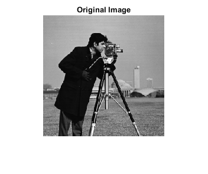 <h2 id="2">-------------------- 2️⃣ Display Multiple Images --------------------</h2>
<pre class="codeinput">B = imread(<span class="string">'cell.tif'</span>);
C = imread(<span class="string">'spine.tif'</span>);
D = imread(<span class="string">'onion.png'</span>);            <span class="comment">% RGB image</span>
figure(<span class="string">'Name'</span>,<span class="string">'Multiple Images'</span>);
subplot(3,1,1), imshow(B), title(<span class="string">'Cell Image'</span>);
subplot(3,1,2), imshow(C), title(<span class="string">'Spine Image'</span>);
subplot(3,1,3), imshow(D), title(<span class="string">'Onion Image'</span>);
</pre>
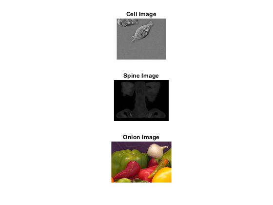 <h2 id="3">-------------------- 3️⃣ Accessing and Modifying Pixels --------------------</h2>
<p>Grayscale pixel access</p>
<pre class="codeinput">pixelValue = B(25,50);
B(25,50) = 255; <span class="comment">% Modify pixel</span>
figure, imshow(B), title(<span class="string">'Modified Cell Image'</span>);

<span class="comment">% RGB pixel access</span>
Dpixel = D(25,50,:);        <span class="comment">% RGB values</span>
Dred   = D(25,50,1);        <span class="comment">% Red channel</span>
D(25,50,:) = [255,255,255]; <span class="comment">% Set white</span>
figure, imshow(D), title(<span class="string">'Modified Onion Image'</span>);
</pre>
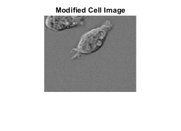 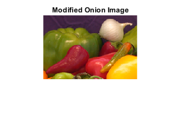 <h2 id="4">-------------------- 4️⃣ Converting Image Types --------------------</h2>
<pre class="codeinput">Dgray = rgb2gray(D);
Dred   = D(:,:,1); Dgreen = D(:,:,2); Dblue = D(:,:,3);

figure(<span class="string">'Name'</span>,<span class="string">'Color Channels'</span>);
subplot(2,3,1), imshow(D), title(<span class="string">'Original RGB'</span>);
subplot(2,3,2), imshow(Dgray), title(<span class="string">'Grayscale'</span>);
subplot(2,3,4), imshow(Dred), title(<span class="string">'Red Channel'</span>);
subplot(2,3,5), imshow(Dgreen), title(<span class="string">'Green Channel'</span>);
subplot(2,3,6), imshow(Dblue), title(<span class="string">'Blue Channel'</span>);
</pre>
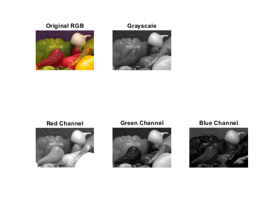 <h2 id="5">-------------------- 5️⃣ Pixel Arithmetic Operations --------------------</h2>
<pre class="codeinput">A = imread(<span class="string">'cameraman.tif'</span>);
Abuild = zeros(size(A),<span class="string">'uint8'</span>); <span class="comment">% Create zero image</span>
B = imadd(A,100);               <span class="comment">% Add 100 to each pixel</span>
C = imcomplement(A);            <span class="comment">% Negative image</span>

<span class="comment">% Manual complement</span>
Atemp = uint8(zeros(size(A)));
Atemp = imadd(Atemp, 255);
D = imsubtract(Atemp,A);

<span class="comment">% Display results</span>
figure(<span class="string">'Name'</span>,<span class="string">'Pixel Operations'</span>);
subplot(2,2,1), imshow(A), title(<span class="string">'Original'</span>);
subplot(2,2,2), imshow(B), title(<span class="string">'Added 100'</span>);
subplot(2,2,3), imshow(C), title(<span class="string">'Negative (imcomplement)'</span>);
subplot(2,2,4), imshow(D), title(<span class="string">'Manual Negative'</span>);
</pre>
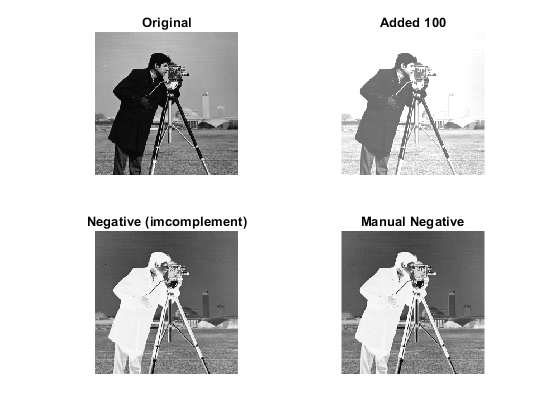 <h2 id="6">-------------------- 6️⃣ Binary Operations --------------------</h2>
<pre class="codeinput">Abw = imbinarize(A); <span class="comment">% Convert to binary</span>
Bbw = imbinarize(B);
figure(<span class="string">'Name'</span>,<span class="string">'Binary Operations'</span>);
subplot(1,3,1), imshow(Abw), title(<span class="string">'Original BW'</span>);
subplot(1,3,2), imshow(Bbw), title(<span class="string">'Added BW'</span>);
subplot(1,3,3), imshow(xor(Abw,Bbw)), title(<span class="string">'XOR'</span>);
</pre>
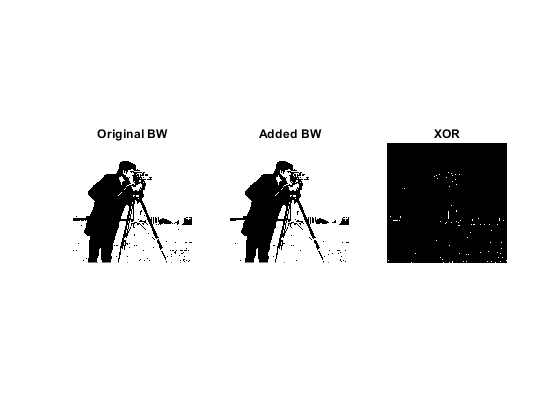 <h2 id="7">========================== Pixel Distribution ==========================</h2>
<h2 id="8">-------------------------- Histogram --------------------------------</h2>
<pre class="codeinput">I = imread(<span class="string">'coins.png'</span>);
figure(<span class="string">'Name'</span>,<span class="string">'Histograms'</span>);
subplot(2,2,1), imshow(I), title(<span class="string">'Original Image'</span>);
subplot(2,2,2), imhist(I), title(<span class="string">'Histogram (Built-in)'</span>);

<span class="comment">% Manual histogram</span>
[n,m] = size(I);
histManual = zeros(1,256);
<span class="keyword">for</span> i = 1:n
    <span class="keyword">for</span> j = 1:m
        value = I(i,j);
        histManual(value+1) = histManual(value+1)+1;
    <span class="keyword">end</span>
<span class="keyword">end</span>
subplot(2,2,3), bar(0:255, histManual);
xlabel(<span class="string">'Gray Level'</span>), ylabel(<span class="string">'Pixel Count'</span>), title(<span class="string">'Manual Histogram'</span>);
</pre>
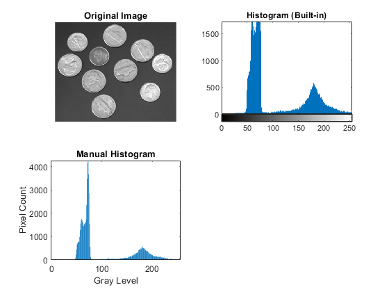 <h2 id="9">-------------------- Thresholding via Histogram --------------------</h2>
<pre class="codeinput">level = 100/255;
It = imbinarize(I, level);
subplot(2,2,4), imshow(It), title([<span class="string">'Thresholded Image (Level='</span> num2str(level*255) <span class="string">')'</span>]);
</pre>
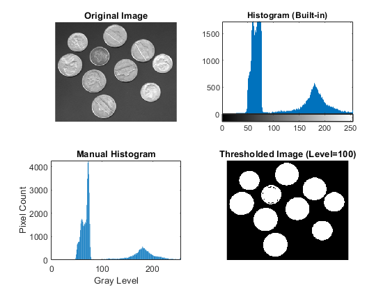 <h2 id="10">-------------------- Contrast Stretching --------------------</h2>
<pre class="codeinput">I = imread(<span class="string">'pout.tif'</span>);
Ics = imadjust(I,stretchlim(I,[0.05,0.95]),[]);
figure(<span class="string">'Name'</span>,<span class="string">'Contrast Stretching'</span>);
subplot(2,2,1), imshow(I), title(<span class="string">'Original'</span>);
subplot(2,2,2), imshow(Ics), title(<span class="string">'Contrast Stretched'</span>);
subplot(2,2,3), imhist(I), title(<span class="string">'Original Histogram'</span>);
subplot(2,2,4), imhist(Ics), title(<span class="string">'Stretched Histogram'</span>);
</pre>
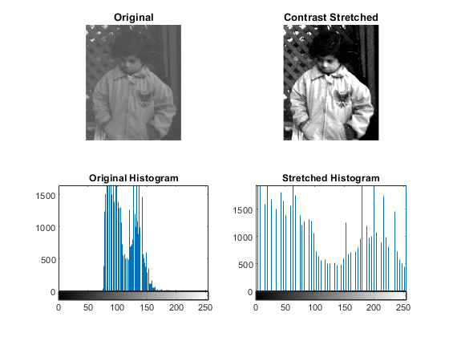 <h2 id="11">-------------------- Histogram Equalization --------------------</h2>
<pre class="codeinput">I = imread(<span class="string">'pout.tif'</span>);          <span class="comment">% Original image</span>
Ieq = histeq(I);                 <span class="comment">% Built-in histogram equalization</span>
J = adapthisteq(I);              <span class="comment">% Adaptive Histogram Equalization (CLAHE)</span>

<span class="comment">% -------------------- Manual Histogram Equalization --------------------</span>
[n, m] = size(I);
num_pixels = n * m;

<span class="comment">% Compute histogram</span>
hist_vals = zeros(1,256);
<span class="keyword">for</span> i = 1:n
    <span class="keyword">for</span> j = 1:m
        hist_vals(I(i,j)+1) = hist_vals(I(i,j)+1) + 1;
    <span class="keyword">end</span>
<span class="keyword">end</span>

<span class="comment">% PDF and CDF</span>
pdf = hist_vals / num_pixels;
cdf = cumsum(pdf);

<span class="comment">% Transformation function</span>
T = uint8(255 * cdf);

<span class="comment">% Apply transformation</span>
I_manual = zeros(size(I), <span class="string">'uint8'</span>);
<span class="keyword">for</span> i = 1:n
    <span class="keyword">for</span> j = 1:m
        I_manual(i,j) = T(I(i,j)+1);
    <span class="keyword">end</span>
<span class="keyword">end</span>

<span class="comment">% -------------------- Display --------------------</span>
figure(<span class="string">'Name'</span>,<span class="string">'Histogram Equalization Comparison'</span>);
subplot(2,3,1), imshow(I), title(<span class="string">'Original Image'</span>);
subplot(2,3,2), imshow(Ieq), title(<span class="string">'Histogram Equalized (Built-in)'</span>);
subplot(2,3,3), imshow(I_manual), title(<span class="string">'Manual Histogram Equalized'</span>);
subplot(2,3,4), imhist(I), title(<span class="string">'Original Histogram'</span>);
subplot(2,3,5), imhist(Ieq), title(<span class="string">'Built-in Equalized Histogram'</span>);
subplot(2,3,6), imhist(I_manual), title(<span class="string">'Manual Equalized Histogram'</span>);
</pre>
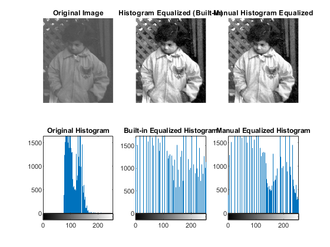 <h2 id="12">-------------------- Histogram Equalization on Color Image --------------------</h2>
<pre class="codeinput">I = imread(<span class="string">'autumn.tif'</span>);
Ihsv = rgb2hsv(I);
V = histeq(Ihsv(:,:,3));
Ihsv(:,:,3) = V;
Iout = hsv2rgb(Ihsv);

figure(<span class="string">'Name'</span>,<span class="string">'Color Histogram Equalization'</span>);
subplot(1,2,1), imshow(I), title(<span class="string">'Original RGB Image'</span>);
subplot(1,2,2), imshow(Iout), title(<span class="string">'Histogram Equalized (Value Channel)'</span>);
</pre>
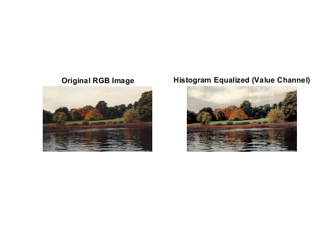 <h2 id="13">========================== POINT PROCESSING TECHNIQUES ==========================</h2>
<p>Purpose: Demonstrate different point operations on grayscale images Techniques included: 1. Negative Image 2. Thresholding 3. Logarithmic Transform 4. Exponential Transform 5. Power-Law (Gamma) Transform 6. Gamma Correction 7. Contrast Stretching (Basic Gray-Level Transformation) 8. Piecewise Linear Transformation 9. Gray Level Slicing 10. Bit-Plane Slicing</p>
<h2 id="14">Read the grayscale image</h2>
<pre class="codeinput">I = imread(<span class="string">'cameraman.tif'</span>); <span class="comment">% Standard 256x256 test image</span>

figure(<span class="string">'Name'</span>,<span class="string">'Point Processing Techniques'</span>,<span class="string">'NumberTitle'</span>,<span class="string">'off'</span>);
</pre>
 <h2 id="15">-------------------- 1️⃣ Negative Image --------------------</h2>
<p>Formula: s = L-1 - r Purpose: Enhance dark details; invert intensities.</p>
<pre class="codeinput">Neg = imcomplement(I);
subplot(3,4,1), imshow(I), title(<span class="string">'Original Image'</span>);
subplot(3,4,2), imshow(Neg), title(<span class="string">'Negative Image'</span>);
</pre>
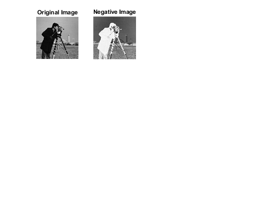 <h2 id="16">-------------------- 2️⃣ Thresholding --------------------</h2>
<p>Formula: BW = 1 if r &gt; T, else 0 Purpose: Segment image into foreground/background</p>
<pre class="codeinput">thresh = 100;
BW = I &gt; thresh;
subplot(3,4,3), imshow(BW), title([<span class="string">'Thresholding (T='</span> num2str(thresh) <span class="string">')'</span>]);
</pre>
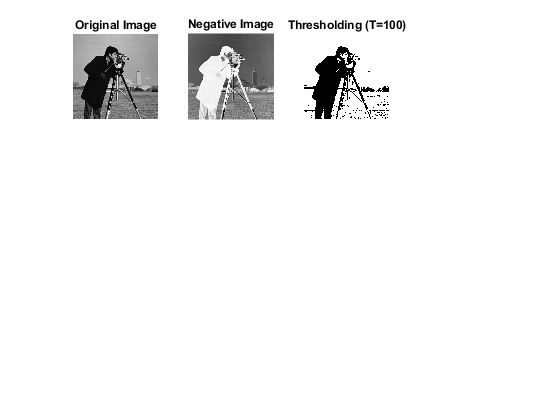 <h2 id="17">-------------------- 3️⃣ Logarithmic Transform --------------------</h2>
<p>Formula: s = c*log(1 + r) Purpose: Brighten dark regions while compressing high intensity</p>
<pre class="codeinput">Id = im2double(I);
c = 255 / log(1 + max(Id(:)));
LogT = c*log(1 + Id);
subplot(3,4,4), imshow(uint8(LogT)), title(<span class="string">'Log Transform'</span>);
</pre>
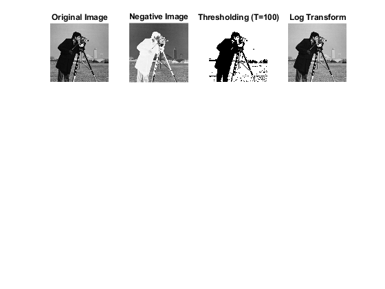 <h2 id="18">-------------------- 4️⃣ Exponential Transform --------------------</h2>
<p>Formula: s = c*((1+alpha)^r - 1) Purpose: Enhance bright pixels exponentially, opposite of log</p>
<pre class="codeinput">Exp1 = 4*((1+0.4).^(Id)-1);
subplot(3,4,5), imshow(Exp1), title(<span class="string">'Exponential Transform'</span>);
</pre>
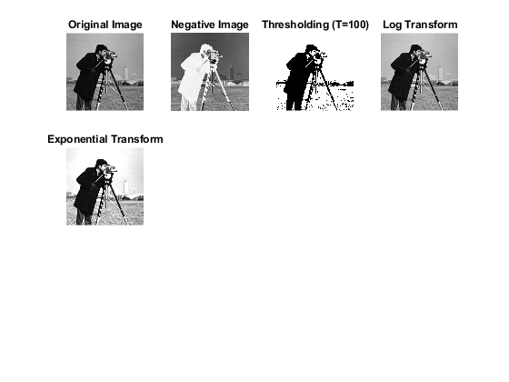 <h2 id="19">-------------------- 5️⃣ Power-Law (Gamma) Transform --------------------</h2>
<p>Formula: s = c * r^gamma Gamma &lt;1: brightens dark regions Gamma &gt;1: darkens bright regions</p>
<pre class="codeinput">Gamma1 = 2*(Id.^0.5);
Gamma2 = 2*(Id.^2.0);
subplot(3,4,6), imshow(Gamma1), title(<span class="string">'Gamma &lt; 1 (Brighten)'</span>);
subplot(3,4,7), imshow(Gamma2), title(<span class="string">'Gamma &gt; 1 (Darken)'</span>);
</pre>
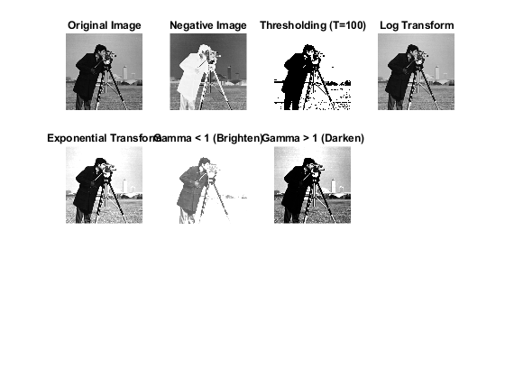 <h2 id="20">-------------------- 6️⃣ Gamma Correction --------------------</h2>
<p>imadjust allows mapping input gray levels with gamma factor</p>
<pre class="codeinput">GammaCorr = imadjust(I,[0 1],[0 1],1/3); <span class="comment">% Gamma = 1/3 brightens image</span>
subplot(3,4,8), imshow(GammaCorr), title(<span class="string">'Gamma Correction (\gamma=1/3)'</span>);
</pre>
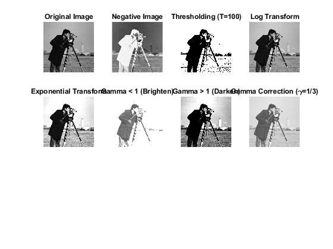 <h2 id="21">-------------------- 7️⃣ Contrast Stretching --------------------</h2>
<p>Formula: linear scaling between min/max intensities Purpose: Increase overall image contrast</p>
<pre class="codeinput">Contrast = imadjust(I, stretchlim(I), []);
subplot(3,4,9), imshow(Contrast), title(<span class="string">'Contrast Stretching'</span>);
</pre>
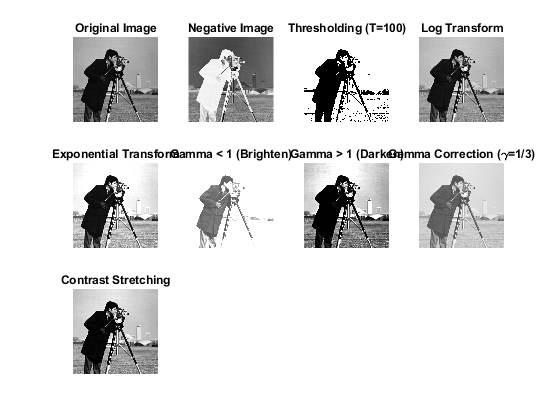 <h2 id="22">-------------------- 8️⃣ Piecewise Linear Transformation --------------------</h2>
<p>Purpose: Apply different slopes for different intensity ranges Example: stretch mid-range, saturate extremes</p>
<pre class="codeinput">Piecewise = imadjust(I,[0.3 0.7],[0 1]);
subplot(3,4,10), imshow(Piecewise), title(<span class="string">'Piecewise Linear'</span>);
</pre>
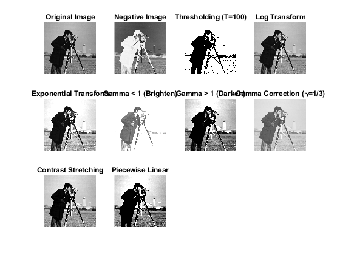 <h2 id="23">-------------------- 9️⃣ Gray Level Slicing --------------------</h2>
<p>Purpose: Highlight specific intensity range, suppress others</p>
<pre class="codeinput">Slice = (I &gt; 100 &amp; I &lt; 180) * 255;
subplot(3,4,11), imshow(uint8(Slice)), title(<span class="string">'Gray Level Slicing (100-180)'</span>);
</pre>
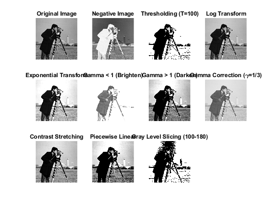 <h2 id="24">--------------------  Bit-Plane Slicing --------------------</h2>
<p>Purpose: Extract significant bit-planes to analyze image details 8th bit-plane shows most significant features</p>
<pre class="codeinput">bp = bitget(I,8);
subplot(3,4,12), imshow(logical(bp)), title(<span class="string">'Bit-Plane Slicing (8th Bit)'</span>);
</pre>
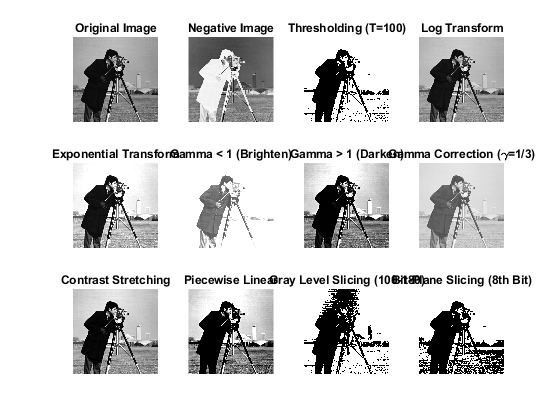 <h2 id="25">================ Spatial Filtering in Image Enhancement ===================</h2>
<p>This script demonstrates neighborhood operations and spatial filters for image enhancement and noise removal.</p>
<h2 id="26">Input Image</h2>
<pre class="codeinput">I = imread(<span class="string">"cameraman.tif"</span>);
figure(<span class="string">'Name'</span>,<span class="string">'Original Image'</span>);
imshow(I), title(<span class="string">'Original Image'</span>);
</pre>
 <h2 id="27">---------------- Neighbourhood Operations ----------------</h2>
<pre class="codeinput">figure(<span class="string">'Name'</span>,<span class="string">'Neighborhood Operations'</span>);

<span class="comment">% Max filter</span>
func = @(x) max(x(:));
J = nlfilter(I,[3 3],func);
subplot(2,2,1), imshow(J), title(<span class="string">'Max Filter (3x3)'</span>);

<span class="comment">% Min filter</span>
func = @(x) min(x(:));
K = nlfilter(I,[3 3],func);
subplot(2,2,2), imshow(K), title(<span class="string">'Min Filter (3x3)'</span>);

<span class="comment">% Simple mean filter</span>
func = @(x) uint8(mean(x(:)));
L = nlfilter(I,[3 3],func);
subplot(2,2,3), imshow(L), title(<span class="string">'Mean Filter (3x3)'</span>);

<span class="comment">% Median filter</span>
M = medfilt2(I,[3 3]);
subplot(2,2,4), imshow(M), title(<span class="string">'Median Filter (3x3)'</span>);
</pre>
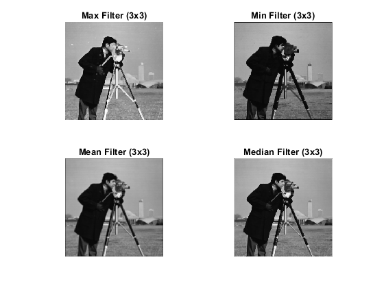 <h2 id="28">---------------- Noise Addition ----------------</h2>
<pre class="codeinput">Isp = imnoise(I,<span class="string">"salt &amp; pepper"</span>,0.03);
Ig  = imnoise(I,<span class="string">"gaussian"</span>,0.02);

figure(<span class="string">'Name'</span>,<span class="string">'Noise Models'</span>);
subplot(1,3,1), imshow(I), title(<span class="string">'Original'</span>);
subplot(1,3,2), imshow(Isp), title(<span class="string">'Salt &amp; Pepper Noise'</span>);
subplot(1,3,3), imshow(Ig), title(<span class="string">'Gaussian Noise'</span>);
</pre>
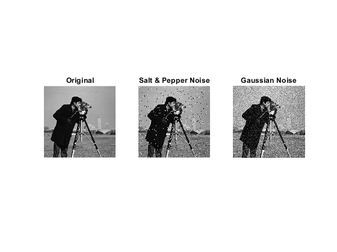 <h2 id="29">---------------- Mean (Averaging) Filter ----------------</h2>
<pre class="codeinput">k = ones(3,3)/9;
Io   = imfilter(I,k);
Iosp = imfilter(Isp,k);
Iog  = imfilter(Ig,k);

figure(<span class="string">'Name'</span>,<span class="string">'Mean Filtering (3x3)'</span>);
subplot(1,3,1), imshow(Io),   title(<span class="string">'Original + Mean Filter'</span>);
subplot(1,3,2), imshow(Iosp), title(<span class="string">'Salt &amp; Pepper + Mean Filter'</span>);
subplot(1,3,3), imshow(Iog),  title(<span class="string">'Gaussian + Mean Filter'</span>);
</pre>
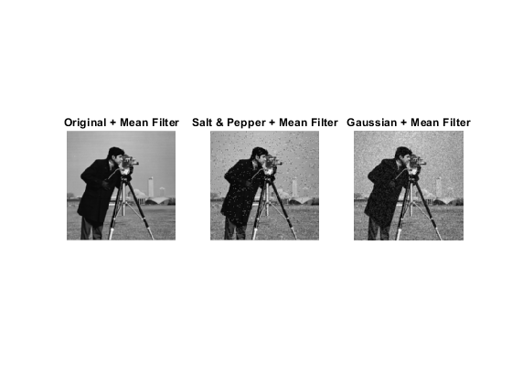 <h2 id="30">Effect of Increasing Filter Size</h2>
<pre class="codeinput">figure(<span class="string">'Name'</span>,<span class="string">'Increasing Filter Size - Mean Filter'</span>);
<span class="keyword">for</span> n = 1:3
    fsize = 3 + 2*(n-1); <span class="comment">% 3, 5, 7</span>
    k = ones(fsize,fsize)/(fsize*fsize);
    If = imfilter(I,k);
    subplot(1,3,n), imshow(If);
    title(sprintf(<span class="string">'Mean Filter %dx%d'</span>,fsize,fsize));
<span class="keyword">end</span>
</pre>
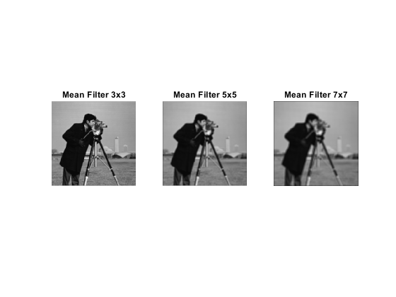 <h2 id="31">---------------- Weighted Averaging Filter ----------------</h2>
<pre class="codeinput">w = [1 2 1; 2 4 2; 1 2 1]/16; <span class="comment">% Gaussian-like weights</span>
Iw = imfilter(I,w);
figure(<span class="string">'Name'</span>,<span class="string">'Weighted Smoothing Filter'</span>);
imshow(Iw), title(<span class="string">'Weighted 3x3 Filter'</span>);
</pre>
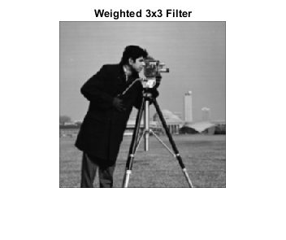 <h2 id="32">---------------- Median vs Mean ----------------</h2>
<pre class="codeinput">Isp_med = medfilt2(Isp,[3 3]);
Isp_avg = imfilter(Isp,ones(3,3)/9);

figure(<span class="string">'Name'</span>,<span class="string">'Median vs Mean for Salt &amp; Pepper'</span>);
subplot(1,2,1), imshow(Isp_avg), title(<span class="string">'Mean Filter'</span>);
subplot(1,2,2), imshow(Isp_med), title(<span class="string">'Median Filter'</span>);
</pre>
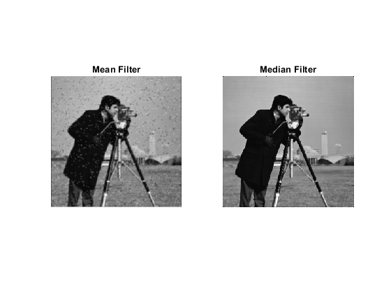 <h2 id="33">---------------- Order-Statistic Filter ----------------</h2>
<pre class="codeinput">Io   = ordfilt2(I,25,ones(5,5));     <span class="comment">% Max in 5x5</span>
Imin = ordfilt2(I,1,ones(5,5));      <span class="comment">% Min in 5x5</span>
Imid = ordfilt2(I,13,ones(5,5));     <span class="comment">% Median approx (5x5)</span>

figure(<span class="string">'Name'</span>,<span class="string">'Order-Statistic Filtering'</span>);
subplot(1,3,1), imshow(Io),   title(<span class="string">'Max Filter (5x5)'</span>);
subplot(1,3,2), imshow(Imin), title(<span class="string">'Min Filter (5x5)'</span>);
subplot(1,3,3), imshow(Imid), title(<span class="string">'Median (5x5)'</span>);
</pre>
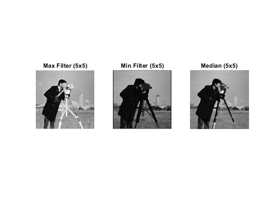 <h2 id="34">---------------- Gaussian Filter ----------------</h2>
<pre class="codeinput">k = fspecial(<span class="string">"gaussian"</span>,[5 5],2);
Io   = imfilter(I,k);
Iosp = imfilter(Isp,k);
Iog  = imfilter(Ig,k);

figure(<span class="string">'Name'</span>,<span class="string">'Gaussian Filtering'</span>);
subplot(1,3,1), imshow(Io),   title(<span class="string">'Original + Gaussian Filter'</span>);
subplot(1,3,2), imshow(Iosp), title(<span class="string">'Salt &amp; Pepper + Gaussian Filter'</span>);
subplot(1,3,3), imshow(Iog),  title(<span class="string">'Gaussian + Gaussian Filter'</span>);
</pre>
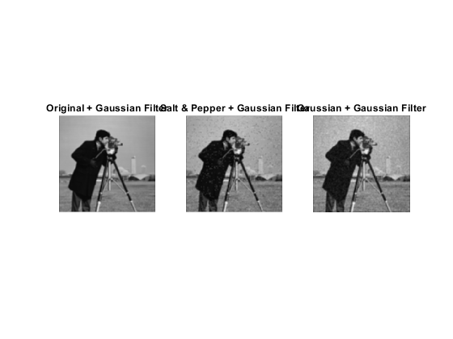 <h2 id="35">---------------- Image Padding ----------------</h2>
<pre class="codeinput">Ip = padarray(I,[20 20],<span class="string">'replicate'</span>,<span class="string">'both'</span>);
figure(<span class="string">'Name'</span>,<span class="string">'Image Padding'</span>);
subplot(1,2,1), imshow(I),  title(<span class="string">'Original'</span>);
subplot(1,2,2), imshow(Ip), title(<span class="string">'Replicate Padding (20 px)'</span>);
</pre>
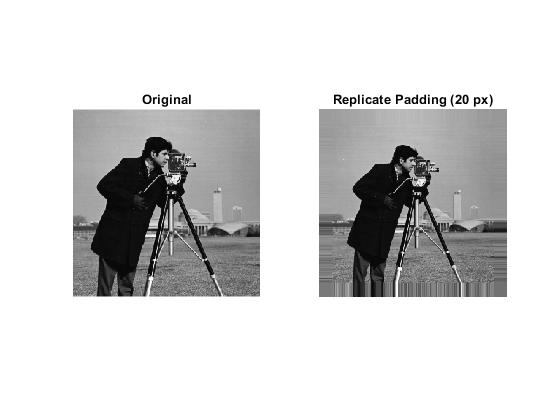 <h2 id="36">=========== First &amp; Second Derivative Filters for Image Enhancement ===========</h2>
<p>Load image</p>
<pre class="codeinput">I = imread(<span class="string">'cameraman.tif'</span>);   <span class="comment">% Replace with bone scan if needed</span>
I = im2double(I);
figure, subplot(3,3,1), imshow(I), title(<span class="string">'Original'</span>);
</pre>
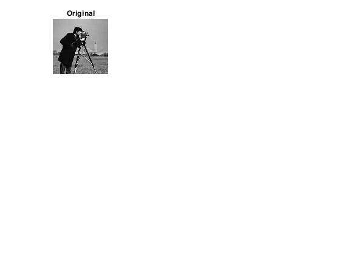 <h2 id="37">---- First Derivative Filters ----</h2>
<p>Sobel Edge Detection</p>
<pre class="codeinput">sobel_edges = edge(I, <span class="string">'sobel'</span>);
subplot(3,3,2), imshow(sobel_edges), title(<span class="string">'First Derivative: Sobel'</span>);

<span class="comment">% Prewitt Edge Detection</span>
prewitt_edges = edge(I, <span class="string">'prewitt'</span>);
subplot(3,3,3), imshow(prewitt_edges), title(<span class="string">'First Derivative: Prewitt'</span>);
</pre>
<pre class="codeoutput error">Execution of script edge as a function is not supported:
C:\Users\eyasi\Documents\cse_academic_s20-21\Semester_VI\cse_3213\test\edge.m

Error in test (line 346)
sobel_edges = edge(I, 'sobel');
</pre>
<h2 id="38">---- Second Derivative Filters ----</h2>
<p>Laplacian Filter</p>
<pre class="codeinput">h_lap = fspecial(<span class="string">'laplacian'</span>, 0.2);
lap_img = imfilter(I, h_lap, <span class="string">'replicate'</span>);
lap_enhanced = I - lap_img; <span class="comment">% Sharpened with Laplacian</span>
subplot(3,3,4), imshow(lap_img, []), title(<span class="string">'Second Derivative: Laplacian'</span>);
subplot(3,3,5), imshow(lap_enhanced, []), title(<span class="string">'Laplacian Sharpened'</span>);

<span class="comment">% Laplacian of Gaussian (LoG)</span>
log_edges = edge(I, <span class="string">'log'</span>);
subplot(3,3,6), imshow(log_edges), title(<span class="string">'Second Derivative: LoG'</span>);
</pre>
<h2 id="39">---- Combined Enhancement ----</h2>
<p>Sobel + Laplacian (example combination)</p>
<pre class="codeinput">combined = im2double(sobel_edges) + mat2gray(lap_enhanced);
subplot(3,3,7), imshow(combined, []), title(<span class="string">'Combined (Sobel + Laplacian)'</span>);

<span class="comment">% Power-law enhancement after Laplacian</span>
gamma = 0.5; <span class="comment">% adjust gamma</span>
power_enhanced = imadjust(lap_enhanced, [], [], gamma);
subplot(3,3,8), imshow(power_enhanced, []), title(<span class="string">'Power-Law after Laplacian'</span>);

<span class="comment">% Original vs Final</span>
subplot(3,3,9), imshowpair(I, power_enhanced, <span class="string">'montage'</span>);
title(<span class="string">'Original vs Enhanced'</span>);
</pre>
<h2 id="40">=============== Bone Scan Image Enhancement ===================</h2>
<pre class="codeinput">I = im2gray(imread(<span class="string">'bonescan.png'</span>));
I = im2double(I);
figure, subplot(3,4,1), imshow(I), title(<span class="string">'Original Image'</span>);

<span class="comment">% Step 1: Laplacian filter for edge detection</span>
h_lap = fspecial(<span class="string">'laplacian'</span>, 0.2);
A = imfilter(I, h_lap, <span class="string">'replicate'</span>);
subplot(3,4,2), imshow(A, []), title(<span class="string">'A: Laplacian'</span>);

<span class="comment">% Step 2: Sharpened image (Original + Laplacian)</span>
B = I - A;  <span class="comment">% Correct sharpening: I + (I - blurred) &asymp; 2I - blurred</span>
subplot(3,4,3), imshow(B, []), title(<span class="string">'B: Sharpened (I-A)'</span>);

<span class="comment">% Step 3: Sobel edge detection (keep as binary)</span>
C = edge(I, <span class="string">'sobel'</span>);
subplot(3,4,4), imshow(C), title(<span class="string">'C: Sobel Edges'</span>);

<span class="comment">% Step 4: Smooth edges with 5x5 averaging filter</span>
h_avg = fspecial(<span class="string">'average'</span>, [5 5]);
D = imfilter(double(C), h_avg, <span class="string">'replicate'</span>); <span class="comment">% Convert C to double for filtering</span>
subplot(3,4,5), imshow(D, []), title(<span class="string">'D: Smoothed Edges'</span>);

<span class="comment">% Step 5: Create edge mask by multiplying edge map with smoothed version</span>
E = C .* D;  <span class="comment">% Emphasize strong edges that persist after smoothing</span>
subplot(3,4,6), imshow(E, []), title(<span class="string">'E: Edge Mask (C&times;D)'</span>);

<span class="comment">% Step 6: Combine Laplacian with edge mask (not sharpened image)</span>
F = A .* E;  <span class="comment">% Apply edge mask to Laplacian</span>
subplot(3,4,7), imshow(F, []), title(<span class="string">'F: Masked Laplacian (A&times;E)'</span>);

<span class="comment">% Step 7: Add masked Laplacian to original image for selective sharpening</span>
G = I + F;  <span class="comment">% Sharpening only at edge locations</span>
subplot(3,4,8), imshow(G, []), title(<span class="string">'G: Selectively Sharpened (I+F)'</span>);

<span class="comment">% Step 8: Gamma correction for final enhancement</span>
gamma = 0.5;  <span class="comment">% Brighten the image</span>
Final = imadjust(G, [], [], gamma);
subplot(3,4,9), imshow(Final, []), title([<span class="string">'Final (γ='</span>, num2str(gamma), <span class="string">')'</span>]);

<span class="comment">% Comparison</span>
subplot(3,4,10), imshowpair(I, Final, <span class="string">'montage'</span>);
title(<span class="string">'Original vs Enhanced'</span>);
</pre>
<h2 id="41">================== Frequency Domain Filtering ==================</h2>
<p>Purpose: Demonstrate smoothing (low-pass) and sharpening (high-pass) in the frequency domain using Ideal, Butterworth, and Gaussian filters.</p>
<p>Frequency domain filtering: - Smoothing (Low-pass): Removes high-frequency noise, blurs edges. - Sharpening (High-pass): Enhances edges, highlights fine details.</p>
<p>Filter types: 1. Ideal: sharp cutoff, may cause ringing (Gibbs effect) 2. Butterworth: smooth cutoff, parameterized by order n 3. Gaussian: smoothest cutoff, no ringing</p>
<p>- Low-pass filters remove noise but blur edges. - High-pass filters enhance edges, useful for sharpening. - Ideal filters cause ringing, Butterworth reduces ringing, Gaussian is smoothest. - Cutoff frequency D0 controls the degree of smoothing/sharpening.</p>
<h2 id="42">------------------- 1️⃣ Load Image -------------------</h2>
<pre class="codeinput">I = imread(<span class="string">'cameraman.tif'</span>);
I = im2double(I);
[rows, cols] = size(I);

figure(<span class="string">'Name'</span>,<span class="string">'Original Image'</span>,<span class="string">'NumberTitle'</span>,<span class="string">'off'</span>);
imshow(I), title(<span class="string">'Original Image'</span>);
</pre>
<h2 id="43">------------------- 2️⃣ Compute FFT -------------------</h2>
<pre class="codeinput">F = fft2(I);           <span class="comment">% 2D Fourier Transform</span>
F_shift = fftshift(F); <span class="comment">% Shift zero-frequency to center</span>

[u,v] = meshgrid(-floor(cols/2):floor((cols-1)/2), -floor(rows/2):floor((rows-1)/2));
D = sqrt(u.^2 + v.^2); <span class="comment">% Distance from center</span>
</pre>
<h2 id="44">------------------- 3️⃣ Low-Pass Filters (Smoothing) -------------------</h2>
<pre class="codeinput">D0 = 30; <span class="comment">% cutoff frequency</span>
n = 2;   <span class="comment">% order for Butterworth</span>

<span class="comment">% Ideal Low-Pass</span>
H_ideal_LP = double(D &lt;= D0);
I_ideal_LP = real(ifft2(ifftshift(F_shift .* H_ideal_LP)));

<span class="comment">% Butterworth Low-Pass</span>
H_butt_LP = 1 ./ (1 + (D./D0).^(2*n));
I_butt_LP = real(ifft2(ifftshift(F_shift .* H_butt_LP)));

<span class="comment">% Gaussian Low-Pass</span>
H_gauss_LP = exp(-(D.^2)./(2*D0^2));
I_gauss_LP = real(ifft2(ifftshift(F_shift .* H_gauss_LP)));

figure(<span class="string">'Name'</span>,<span class="string">'Low-Pass Filters'</span>,<span class="string">'NumberTitle'</span>,<span class="string">'off'</span>);
subplot(2,2,1), imshow(I), title(<span class="string">'Original'</span>);
subplot(2,2,2), imshow(I_ideal_LP, []), title(<span class="string">'Ideal Low-Pass'</span>);
subplot(2,2,3), imshow(I_butt_LP, []), title(<span class="string">'Butterworth Low-Pass'</span>);
subplot(2,2,4), imshow(I_gauss_LP, []), title(<span class="string">'Gaussian Low-Pass'</span>);
</pre>
<h2 id="45">------------------- 4️⃣ High-Pass Filters (Sharpening) -------------------</h2>
<p>High-pass = 1 - Low-pass</p>
<pre class="codeinput">
<span class="comment">% Ideal High-Pass</span>
H_ideal_HP = 1 - H_ideal_LP;
I_ideal_HP = real(ifft2(ifftshift(F_shift .* H_ideal_HP)));

<span class="comment">% Butterworth High-Pass</span>
H_butt_HP = 1 - H_butt_LP;
I_butt_HP = real(ifft2(ifftshift(F_shift .* H_butt_HP)));

<span class="comment">% Gaussian High-Pass</span>
H_gauss_HP = 1 - H_gauss_LP;
I_gauss_HP = real(ifft2(ifftshift(F_shift .* H_gauss_HP)));

figure(<span class="string">'Name'</span>,<span class="string">'High-Pass Filters'</span>,<span class="string">'NumberTitle'</span>,<span class="string">'off'</span>);
subplot(2,2,1), imshow(I), title(<span class="string">'Original'</span>);
subplot(2,2,2), imshow(I_ideal_HP, []), title(<span class="string">'Ideal High-Pass'</span>);
subplot(2,2,3), imshow(I_butt_HP, []), title(<span class="string">'Butterworth High-Pass'</span>);
subplot(2,2,4), imshow(I_gauss_HP, []), title(<span class="string">'Gaussian High-Pass'</span>);
</pre>
<h2 id="46">================== Image Restoration &amp; Noise Filtering ==================</h2>
<p>Purpose: Demonstrate image noise types and restoration methods using different spatial and frequency domain filters. Methods Included: 1. Noise Types: Gaussian, Salt &amp; Pepper, Speckle 2. Linear Spatial Filters: Arithmetic Mean, Geometric, Harmonic, Contraharmonic 3. Order-Statistic Filters: Median, Max, Min, Midpoint, Alpha-Trimmed Mean 4. Frequency Domain Filter: Band-Reject Filter for periodic noise 5. Adaptive Filters: Adaptive local and median filters</p>
<pre class="codeinput">
<span class="comment">%Notes:</span>
<span class="comment">%Spatial Linear Filters:</span>
<span class="comment">%    * Arithmetic mean: smooths Gaussian noise.</span>
<span class="comment">%    * Geometric mean: better for multiplicative noise.</span>
<span class="comment">%    * Harmonic mean: removes salt noise.</span>
<span class="comment">%    * Contraharmonic mean: removes salt or pepper depending on Q.</span>
<span class="comment">%Order-Statistic Filters:</span>
<span class="comment">%    * Median: removes salt &amp; pepper.</span>
<span class="comment">%    * Max / Min: emphasize bright/dark points.</span>
<span class="comment">%    * Midpoint: removes extremes.</span>
<span class="comment">%    * Alpha-trimmed mean: removes extremes while smoothing.</span>
<span class="comment">%Frequency Domain Filter:</span>
<span class="comment">%    * Band-reject filter removes periodic noise.</span>
<span class="comment">%Adaptive Filters:</span>
<span class="comment">%    * Wiener2 for local variance adjustment.</span>
<span class="comment">%    * Adaptive median preserves edges.</span>
</pre>
<h2 id="47">------------------- 1️⃣ Load Image -------------------</h2>
<pre class="codeinput">I = imread(<span class="string">'cameraman.tif'</span>);
I = im2double(I);

figure(<span class="string">'Name'</span>,<span class="string">'Original Image'</span>,<span class="string">'NumberTitle'</span>,<span class="string">'off'</span>);
imshow(I), title(<span class="string">'Original Image'</span>);
</pre>
<h2 id="48">------------------- 2️⃣ Add Noise -------------------</h2>
<pre class="codeinput">I_gauss = imnoise(I,<span class="string">'gaussian'</span>,0,0.01);          <span class="comment">% Gaussian noise</span>
I_sp   = imnoise(I,<span class="string">'salt &amp; pepper'</span>,0.02);       <span class="comment">% Salt &amp; Pepper noise</span>
I_speck= imnoise(I,<span class="string">'speckle'</span>,0.04);             <span class="comment">% Speckle (multiplicative)</span>

figure(<span class="string">'Name'</span>,<span class="string">'Noisy Images'</span>,<span class="string">'NumberTitle'</span>,<span class="string">'off'</span>);
subplot(1,3,1), imshow(I_gauss), title(<span class="string">'Gaussian Noise'</span>);
subplot(1,3,2), imshow(I_sp), title(<span class="string">'Salt &amp; Pepper Noise'</span>);
subplot(1,3,3), imshow(I_speck), title(<span class="string">'Speckle Noise'</span>);
</pre>
<h2 id="49">------------------- 3️⃣ Linear Spatial Filters -------------------</h2>
<p>--- Arithmetic Mean Filter ---</p>
<pre class="codeinput">h = fspecial(<span class="string">'average'</span>,3); <span class="comment">% 3x3 averaging kernel</span>
I_arith = imfilter(I_gauss,h,<span class="string">'replicate'</span>);

<span class="comment">% --- Geometric Mean Filter ---</span>
[m,n] = size(I);
I_geo = zeros(m,n);
<span class="keyword">for</span> i=2:m-1
    <span class="keyword">for</span> j=2:n-1
        patch = I_gauss(i-1:i+1,j-1:j+1);
        I_geo(i,j) = exp(mean(log(patch(:)+eps))); <span class="comment">% eps to avoid log(0)</span>
    <span class="keyword">end</span>
<span class="keyword">end</span>

<span class="comment">% --- Harmonic Mean Filter ---</span>
I_harm = zeros(m,n);
<span class="keyword">for</span> i=2:m-1
    <span class="keyword">for</span> j=2:n-1
        patch = I_gauss(i-1:i+1,j-1:j+1);
        I_harm(i,j) = 9 / sum(1./(patch(:)+eps));
    <span class="keyword">end</span>
<span class="keyword">end</span>

<span class="comment">% --- Contraharmonic Mean Filter (Q = 1.5 for pepper noise removal) ---</span>
Q = 1.5;
I_contra = zeros(m,n);
<span class="keyword">for</span> i=2:m-1
    <span class="keyword">for</span> j=2:n-1
        patch = I_sp(i-1:i+1,j-1:j+1);
        I_contra(i,j) = sum(patch(:).^(Q+1)) / sum(patch(:).^Q);
    <span class="keyword">end</span>
<span class="keyword">end</span>

figure(<span class="string">'Name'</span>,<span class="string">'Linear Filters'</span>,<span class="string">'NumberTitle'</span>,<span class="string">'off'</span>);
subplot(2,2,1), imshow(I_arith), title(<span class="string">'Arithmetic Mean Filter'</span>);
subplot(2,2,2), imshow(I_geo), title(<span class="string">'Geometric Mean Filter'</span>);
subplot(2,2,3), imshow(I_harm), title(<span class="string">'Harmonic Mean Filter'</span>);
subplot(2,2,4), imshow(I_contra), title(<span class="string">'Contraharmonic Filter'</span>);
</pre>
<h2 id="50">------------------- 4️⃣ Order-Statistic Filters -------------------</h2>
<p>Median Filter (removes salt &amp; pepper noise)</p>
<pre class="codeinput">I_median = medfilt2(I_sp,[3 3]);

<span class="comment">% Max Filter (emphasizes bright points)</span>
I_max = ordfilt2(I_sp,9,ones(3));

<span class="comment">% Min Filter (removes bright noise)</span>
I_min = ordfilt2(I_sp,1,ones(3));

<span class="comment">% Midpoint Filter</span>
I_mid = 0.5*(I_max + I_min);

<span class="comment">% Alpha-trimmed mean (alpha = 2)</span>
alpha = 2;
I_alpha = zeros(m,n);
<span class="keyword">for</span> i=2:m-1
    <span class="keyword">for</span> j=2:n-1
        patch = sort(I_sp(i-1:i+1,j-1:j+1));
        I_alpha(i,j) = mean(patch(alpha+1:end-alpha));
    <span class="keyword">end</span>
<span class="keyword">end</span>

figure(<span class="string">'Name'</span>,<span class="string">'Order-Statistic Filters'</span>,<span class="string">'NumberTitle'</span>,<span class="string">'off'</span>);
subplot(2,3,1), imshow(I_median), title(<span class="string">'Median Filter'</span>);
subplot(2,3,2), imshow(I_max), title(<span class="string">'Max Filter'</span>);
subplot(2,3,3), imshow(I_min), title(<span class="string">'Min Filter'</span>);
subplot(2,3,4), imshow(I_mid), title(<span class="string">'Midpoint Filter'</span>);
subplot(2,3,5), imshow(I_alpha), title(<span class="string">'Alpha-Trimmed Mean'</span>);

<span class="comment">% Manual (Max, Min, Median, Midpoint)</span>
I_sp = imread(<span class="string">'eight.tif'</span>);         <span class="comment">% Example noisy image</span>
I_sp = im2double(I_sp);             <span class="comment">% Convert to double for computation</span>
[rows, cols] = size(I_sp);

padI = padarray(I_sp, [1 1], <span class="string">'replicate'</span>);  <span class="comment">% Pad image for 3x3 window</span>

<span class="comment">% Initialize output images</span>
I_median_manual = zeros(rows, cols);
I_max_manual    = zeros(rows, cols);
I_min_manual    = zeros(rows, cols);
I_mid_manual    = zeros(rows, cols);

<span class="keyword">for</span> i = 2:rows+1
    <span class="keyword">for</span> j = 2:cols+1
        window = padI(i-1:i+1, j-1:j+1);     <span class="comment">% Extract 3x3 neighborhood</span>
        vals = window(:);                     <span class="comment">% Flatten to 1D</span>
        <span class="comment">% Median filter</span>
        I_median_manual(i-1,j-1) = median(vals);
        <span class="comment">% Max filter</span>
        I_max_manual(i-1,j-1) = max(vals);
        <span class="comment">% Min filter</span>
        I_min_manual(i-1,j-1) = min(vals);
        <span class="comment">% Midpoint filter</span>
        I_mid_manual(i-1,j-1) = 0.5 * (max(vals) + min(vals));
    <span class="keyword">end</span>
<span class="keyword">end</span>

<span class="comment">% Display results</span>
figure;
subplot(2,3,1), imshow(I_sp, []), title(<span class="string">'Original Noisy Image'</span>);
subplot(2,3,2), imshow(I_median_manual, []), title(<span class="string">'Median Filter (Manual)'</span>);
subplot(2,3,3), imshow(I_max_manual, []), title(<span class="string">'Max Filter (Manual)'</span>);
subplot(2,3,4), imshow(I_min_manual, []), title(<span class="string">'Min Filter (Manual)'</span>);
subplot(2,3,5), imshow(I_mid_manual, []), title(<span class="string">'Midpoint Filter (Manual)'</span>);
</pre>
<h2 id="51">------------------- 5️⃣ Frequency Domain Filter -------------------</h2>
<p>Band-reject filter for periodic noise</p>
<pre class="codeinput">I_fft = fft2(I);
I_fft_shift = fftshift(I_fft);

[rows,cols] = size(I);
[u,v] = meshgrid(-floor(cols/2):floor((cols-1)/2), -floor(rows/2):floor((rows-1)/2));
D = sqrt(u.^2 + v.^2);
D0 = 30; W = 10; <span class="comment">% reject band radius &amp; width</span>
H = 1./(1 + ((D.*W)./(D.^2 - D0^2 + eps)).^(2)); <span class="comment">% Butterworth Band-Reject</span>

I_filt = real(ifft2(ifftshift(I_fft_shift.*H)));

figure(<span class="string">'Name'</span>,<span class="string">'Frequency Domain Filtering'</span>,<span class="string">'NumberTitle'</span>,<span class="string">'off'</span>);
imshow(I_filt, []), title(<span class="string">'Band-Reject Filter Applied'</span>);
</pre>
<h2 id="52">------------------- 6️⃣ Adaptive Filters -------------------</h2>
<p>Adaptive Local Noise Reduction (mean &amp; variance)</p>
<pre class="codeinput">I_adapt = wiener2(I_gauss,[5 5]); <span class="comment">% MATLAB built-in adaptive filter</span>

<span class="comment">% Adaptive Median Filter (removes salt &amp; pepper noise, preserves edges)</span>
I_adapt_med = medfilt2(I_sp,[5 5]); <span class="comment">% window size 5x5</span>

figure(<span class="string">'Name'</span>,<span class="string">'Adaptive Filters'</span>,<span class="string">'NumberTitle'</span>,<span class="string">'off'</span>);
subplot(1,2,1), imshow(I_adapt), title(<span class="string">'Adaptive Local Filter (Wiener)'</span>);
subplot(1,2,2), imshow(I_adapt_med), title(<span class="string">'Adaptive Median Filter'</span>);
</pre>
<h2 id="53">================== Points, Lines, and Edges Detection ==================</h2>
<p>Purpose: Detect points, lines, and edges in images. Methods included: 1. Point Detection (custom kernel) 2. Line Detection (custom kernel) 3. First-Order Edge Detection: Roberts, Prewitt, Sobel (built-in + manual) 4. Second-Order Edge Detection: Laplacian, Laplacian of Gaussian (LoG) 5. Edge Enhancement: Laplacian Sharpening</p>
<p>Notes: - Point Detection: highlights isolated bright/dark pixels using custom Laplacian kernel. - Line Detection: custom kernels detect horizontal and vertical line structures. - First-Order Edge Detection: Roberts, Prewitt, Sobel detect gradient magnitude. - Second-Order Edge Detection: Laplacian and LoG detect zero-crossings. - Edge Enhancement: subtracting Laplacian emphasizes edges in the original image. - Manual implementations illustrate convolution and gradient calculations; built-in functions are optimized for speed.</p>
<h2 id="54">------------------- 1️⃣ Point Detection -------------------</h2>
<pre class="codeinput">I = imread(<span class="string">'rice.png'</span>);           <span class="comment">% Grayscale image</span>
I = double(I);

<span class="comment">% Custom point detection kernel</span>
h_point = [-1 -1 -1; -1 8 -1; -1 -1 -1];

<span class="comment">% Apply filter</span>
I_points = imfilter(I, h_point, <span class="string">'replicate'</span>);

figure(<span class="string">'Name'</span>,<span class="string">'Point and Line Detection'</span>,<span class="string">'NumberTitle'</span>,<span class="string">'off'</span>);
subplot(2,3,1), imshow(uint8(I)), title(<span class="string">'Original Image'</span>);
subplot(2,3,2), imshow(I_points, []), title(<span class="string">'Points Detected'</span>);
</pre>
<h2 id="55">------------------- 2️⃣ Line Detection -------------------</h2>
<p>Custom horizontal line detection kernel</p>
<pre class="codeinput">h_line_h = [-1 -1 -1; 2 2 2; -1 -1 -1];
I_lines_h = imfilter(I, h_line_h, <span class="string">'replicate'</span>);

<span class="comment">% Vertical lines kernel (transpose of horizontal kernel)</span>
h_line_v = h_line_h';
I_lines_v = imfilter(I, h_line_v, <span class="string">'replicate'</span>);

subplot(2,3,3), imshow(I_lines_h, []), title(<span class="string">'Horizontal Lines'</span>);
subplot(2,3,4), imshow(I_lines_v, []), title(<span class="string">'Vertical Lines'</span>);
</pre>
<h2 id="56">------------------- 3️⃣ First-Order Edge Detection -------------------</h2>
<p>Built-in edge detection</p>
<pre class="codeinput">IE_roberts = edge(I, <span class="string">'roberts'</span>);
IE_prewitt = edge(I, <span class="string">'prewitt'</span>);
IE_sobel   = edge(I, <span class="string">'sobel'</span>);

figure(<span class="string">'Name'</span>,<span class="string">'Built-in Edge Detection'</span>,<span class="string">'NumberTitle'</span>,<span class="string">'off'</span>);
subplot(2,2,1), imshow(uint8(I)), title(<span class="string">'Original Image'</span>);
subplot(2,2,2), imshow(IE_roberts), title(<span class="string">'Roberts Edge'</span>);
subplot(2,2,3), imshow(IE_prewitt), title(<span class="string">'Prewitt Edge'</span>);
subplot(2,2,4), imshow(IE_sobel), title(<span class="string">'Sobel Edge'</span>);

<span class="comment">% Manual edge detection</span>
I = im2double(imread(<span class="string">'cameraman.tif'</span>));
[rows, cols] = size(I);

<span class="comment">% Roberts kernels</span>
roberts_x = [-1 0; 0 1];
roberts_y = [0 -1; 1 0];

G_roberts = zeros(rows-1, cols-1);

<span class="keyword">for</span> i = 1:rows-1
    <span class="keyword">for</span> j = 1:cols-1
        region = I(i:i+1, j:j+1);
        Gx = sum(sum(region .* roberts_x));
        Gy = sum(sum(region .* roberts_y));
        G_roberts(i,j) = sqrt(Gx^2 + Gy^2);
    <span class="keyword">end</span>
<span class="keyword">end</span>

figure;
imshow(G_roberts, []);
title(<span class="string">'Roberts Edge (Manual)'</span>);

<span class="comment">% Prewitt kernels</span>
prewitt_x = [-1 0 1; -1 0 1; -1 0 1];
prewitt_y = [-1 -1 -1; 0 0 0; 1 1 1];

G_prewitt = zeros(rows-2, cols-2);

<span class="keyword">for</span> i = 2:rows-1
    <span class="keyword">for</span> j = 2:cols-1
        region = I(i-1:i+1, j-1:j+1);
        Gx = sum(sum(region .* prewitt_x));
        Gy = sum(sum(region .* prewitt_y));
        G_prewitt(i-1,j-1) = sqrt(Gx^2 + Gy^2);
    <span class="keyword">end</span>
<span class="keyword">end</span>

threshold = 0.15 * max(G_prewitt(:));
BW_prewitt = G_prewitt &gt; threshold;

figure;
subplot(1,2,1), imshow(G_prewitt, []), title(<span class="string">'Prewitt Gradient'</span>);
subplot(1,2,2), imshow(BW_prewitt), title(<span class="string">'Prewitt Binary Edge'</span>);

<span class="comment">% Sobel kernels</span>
sobel_x = [-1 0 1; -2 0 2; -1 0 1];
sobel_y = [-1 -2 -1; 0 0 0; 1 2 1];

G_sobel = zeros(rows-2, cols-2);

<span class="keyword">for</span> i = 2:rows-1
    <span class="keyword">for</span> j = 2:cols-1
        region = I(i-1:i+1, j-1:j+1);
        Gx = sum(sum(region .* sobel_x));
        Gy = sum(sum(region .* sobel_y));
        G_sobel(i-1,j-1) = sqrt(Gx^2 + Gy^2);
    <span class="keyword">end</span>
<span class="keyword">end</span>

figure;
imshow(G_sobel, []);
title(<span class="string">'Sobel Edge (Manual)'</span>);
</pre>
<h2 id="57">------------------- 4️⃣ Second-Order Edge Detection -------------------</h2>
<p>Laplacian</p>
<pre class="codeinput">I_gray = rgb2gray(imread(<span class="string">"peppers.png"</span>));
k_lap = fspecial(<span class="string">"laplacian"</span>);
I_lap = imfilter(double(I_gray), k_lap, <span class="string">"symmetric"</span>);

figure;
subplot(1,2,1), imagesc(I_gray), title(<span class="string">'Original Image'</span>);
subplot(1,2,2), imagesc(I_lap), colormap(<span class="string">"gray"</span>), title(<span class="string">'Laplacian'</span>);

<span class="comment">% Laplacian of Gaussian (LoG)</span>
I_log = double(imread(<span class="string">'cameraman.tif'</span>));
h_log = fspecial(<span class="string">'log'</span>, [7 7], 0.5);  <span class="comment">% 7x7 kernel, sigma=0.5</span>
I_log_filtered = imfilter(I_log, h_log, <span class="string">'replicate'</span>);

figure;
subplot(1,2,1), imshow(uint8(I_log)), title(<span class="string">'Original Image'</span>);
subplot(1,2,2), imshow(I_log_filtered, []), title(<span class="string">'Laplacian of Gaussian'</span>);
</pre>
<h2 id="58">------------------- 5️⃣ Edge Enhancement -------------------</h2>
<pre class="codeinput">A = im2double(imread(<span class="string">"cameraman.tif"</span>));
h_sharp = fspecial(<span class="string">"laplacian"</span>,0.3);
B = imfilter(A, h_sharp, <span class="string">"replicate"</span>);
C = imsubtract(A,B);

figure;
subplot(1,3,1), imshow(A), title(<span class="string">'Original Image'</span>);
subplot(1,3,2), imshow(B), title(<span class="string">'Laplacian'</span>);
subplot(1,3,3), imshow(C), title(<span class="string">'Edge Sharpened'</span>);
</pre>
<h2 id="59">=========================== Thresholding ============================</h2>
<p>Purpose: Demonstrate various thresholding techniques Methods included: 1. Global thresholding (fixed + Otsu) * A single threshold value is applied to the entire image. * Best when illumination is uniform. * Example: Manual threshold, Otsu's method. 2. Local thresholding (adaptive) * Threshold is computed for each pixel based on a local neighborhood. * Useful when lighting is uneven. * MATLAB: adaptthresh + imbinarize. 3. Basic adaptive thresholding (local mean) * Similar to local thresholding but simpler rules, e.g., mean or median of neighborhood. * Often called "adaptive mean thresholding". 4. Thresholding Using Histogram</p>
<pre class="codeinput">I = imread(<span class="string">'rice.png'</span>);          <span class="comment">% Read grayscale image</span>
[n, m] = size(I);
</pre>
<h2 id="60">Display Original Image</h2>
<pre class="codeinput">figure;
subplot(2,3,1), imshow(I), title(<span class="string">'Original Image'</span>);
</pre>
<h2 id="61">️ Manual Loop-Based Thresholding</h2>
<pre class="codeinput">threshold = 125;                 <span class="comment">% fixed global threshold</span>
I_loop = I;                       <span class="comment">% copy of original</span>
<span class="keyword">for</span> i = 1:n
    <span class="keyword">for</span> j = 1:m
        <span class="keyword">if</span> I_loop(i,j) &gt; threshold
            I_loop(i,j) = 1;      <span class="comment">% binary 1</span>
        <span class="keyword">else</span>
            I_loop(i,j) = 0;      <span class="comment">% binary 0</span>
        <span class="keyword">end</span>
    <span class="keyword">end</span>
<span class="keyword">end</span>
subplot(2,3,2), imshow(I_loop, []), title(<span class="string">'Manual Thresholding'</span>);
</pre>
<h2 id="62">Vectorized Thresholding</h2>
<pre class="codeinput">BW_vector = I &gt; threshold;       <span class="comment">% fast, matrix-based</span>
subplot(2,3,3), imshow(BW_vector), title(<span class="string">'Vectorized Thresholding'</span>);
</pre>
<h2 id="63">Global Thresholding (Otsu)</h2>
<pre class="codeinput">level_otsu = graythresh(I);       <span class="comment">% normalized [0,1]</span>
BW_otsu = imbinarize(I, level_otsu);
subplot(2,3,4), imshow(BW_otsu), title(<span class="string">'Otsu Thresholding'</span>);
</pre>
<h2 id="64">Local Thresholding (Adaptive)</h2>
<pre class="codeinput">T_local = adaptthresh(I, 0.5);   <span class="comment">% sensitivity 0.5, default neighborhood 11x11</span>
BW_local = imbinarize(I, T_local);
subplot(2,3,5), imshow(BW_local), title(<span class="string">'Local Thresholding (Adaptive)'</span>);
</pre>
<h2 id="65">Basic Adaptive Thresholding (Local Mean)</h2>
<pre class="codeinput">window = fspecial(<span class="string">'average'</span>, [15 15]);   <span class="comment">% 15x15 mean filter</span>
local_mean = imfilter(double(I), window, <span class="string">'replicate'</span>);
BW_basic_adapt = I &gt; uint8(local_mean);  <span class="comment">% compare pixel to local mean</span>
subplot(2,3,6), imshow(BW_basic_adapt), title(<span class="string">'Basic Adaptive (Mean) Threshold'</span>);
</pre>
<h2 id="66">------------------- Thresholding Using Histogram -------------------</h2>
<p>1. Histogram-based thresholding is useful when the image has two distinct peaks (bimodal). 2. Manual threshold from histogram: select intensity between peaks. 3. Otsu's method automates this process by maximizing between-class variance. 4. For images with uneven illumination, consider adaptive thresholding.</p>
<pre class="codeinput">I = imread(<span class="string">'rice.png'</span>);          <span class="comment">% Read grayscale image</span>
[n, m] = size(I);
</pre>
<h2 id="67">1️⃣ Display Original Image and Histogram</h2>
<pre class="codeinput">figure;
subplot(2,2,1), imshow(I), title(<span class="string">'Original Image'</span>);

<span class="comment">% Compute histogram manually</span>
hist_manual = zeros(1,256);
<span class="keyword">for</span> i = 1:n
    <span class="keyword">for</span> j = 1:m
        value = I(i,j);
        hist_manual(value+1) = hist_manual(value+1) + 1; <span class="comment">% MATLAB indices start at 1</span>
    <span class="keyword">end</span>
<span class="keyword">end</span>

<span class="comment">% Plot histogram</span>
subplot(2,2,2)
bar(0:255, hist_manual)
xlabel(<span class="string">'Gray Level'</span>), ylabel(<span class="string">'Pixel Count'</span>)
title(<span class="string">'Manual Histogram'</span>)
</pre>
<h2 id="68">2️⃣ Threshold Selection from Histogram</h2>
<p>Example: pick threshold where histogram valley occurs (for rice.png, a typical value is ~100)</p>
<pre class="codeinput">threshold_hist = 100;

<span class="comment">% Apply threshold</span>
BW_hist = I &gt; threshold_hist;

subplot(2,2,3), imshow(BW_hist), title([<span class="string">'Thresholded Image (T = '</span> num2str(threshold_hist) <span class="string">')'</span>])
</pre>
<h2 id="69">3️⃣ Automatic Histogram-Based Threshold (Otsu)</h2>
<pre class="codeinput">level_otsu = graythresh(I);       <span class="comment">% normalized [0,1]</span>
BW_otsu = imbinarize(I, level_otsu);

subplot(2,2,4), imshow(BW_otsu), title(<span class="string">'Otsu Thresholding (Automatic)'</span>)
</pre>
<h2 id="70">------------------- --------------------------- -------------------</h2>
<p class="footer">
<br>
<a href="https://www.mathworks.com/products/matlab/">Published with MATLAB&reg; R2023b</a>
<br>
</p>
</div>
<!--
##### SOURCE BEGIN #####
%% ========================== BASIC IMAGE OPERATIONS ==========================
% Purpose: Demonstrate reading, writing, displaying, and analyzing images
%% REPLACE_WITH_DASH_DASHREPLACE_WITH_DASH_DASHREPLACE_WITH_DASH_DASHREPLACE_WITH_DASH_DASHREPLACE_WITH_DASH_DASHREPLACE_WITH_DASH_DASHREPLACE_WITH_DASH_DASHREPLACE_WITH_DASH_DASHREPLACE_WITH_DASH_DASHREPLACE_WITH_DASH_DASH 1️⃣ Read, Write, Display REPLACE_WITH_DASH_DASHREPLACE_WITH_DASH_DASHREPLACE_WITH_DASH_DASHREPLACE_WITH_DASH_DASHREPLACE_WITH_DASH_DASHREPLACE_WITH_DASH_DASHREPLACE_WITH_DASH_DASHREPLACE_WITH_DASH_DASHREPLACE_WITH_DASH_DASHREPLACE_WITH_DASH_DASH
I = imread('cameraman.tif');       % Read grayscale image
info = imfinfo('cameraman.tif');   % Get image metadata
imwrite(I,'cameraman_copy.jpg','jpg'); % Save as JPEG
figure('Name','Image Display'); imshow(I); title('Original Image');

%% REPLACE_WITH_DASH_DASHREPLACE_WITH_DASH_DASHREPLACE_WITH_DASH_DASHREPLACE_WITH_DASH_DASHREPLACE_WITH_DASH_DASHREPLACE_WITH_DASH_DASHREPLACE_WITH_DASH_DASHREPLACE_WITH_DASH_DASHREPLACE_WITH_DASH_DASHREPLACE_WITH_DASH_DASH 2️⃣ Display Multiple Images REPLACE_WITH_DASH_DASHREPLACE_WITH_DASH_DASHREPLACE_WITH_DASH_DASHREPLACE_WITH_DASH_DASHREPLACE_WITH_DASH_DASHREPLACE_WITH_DASH_DASHREPLACE_WITH_DASH_DASHREPLACE_WITH_DASH_DASHREPLACE_WITH_DASH_DASHREPLACE_WITH_DASH_DASH
B = imread('cell.tif');
C = imread('spine.tif');
D = imread('onion.png');            % RGB image
figure('Name','Multiple Images');
subplot(3,1,1), imshow(B), title('Cell Image');
subplot(3,1,2), imshow(C), title('Spine Image');
subplot(3,1,3), imshow(D), title('Onion Image');

%% REPLACE_WITH_DASH_DASHREPLACE_WITH_DASH_DASHREPLACE_WITH_DASH_DASHREPLACE_WITH_DASH_DASHREPLACE_WITH_DASH_DASHREPLACE_WITH_DASH_DASHREPLACE_WITH_DASH_DASHREPLACE_WITH_DASH_DASHREPLACE_WITH_DASH_DASHREPLACE_WITH_DASH_DASH 3️⃣ Accessing and Modifying Pixels REPLACE_WITH_DASH_DASHREPLACE_WITH_DASH_DASHREPLACE_WITH_DASH_DASHREPLACE_WITH_DASH_DASHREPLACE_WITH_DASH_DASHREPLACE_WITH_DASH_DASHREPLACE_WITH_DASH_DASHREPLACE_WITH_DASH_DASHREPLACE_WITH_DASH_DASHREPLACE_WITH_DASH_DASH
% Grayscale pixel access
pixelValue = B(25,50);
B(25,50) = 255; % Modify pixel
figure, imshow(B), title('Modified Cell Image');

% RGB pixel access
Dpixel = D(25,50,:);        % RGB values
Dred   = D(25,50,1);        % Red channel
D(25,50,:) = [255,255,255]; % Set white
figure, imshow(D), title('Modified Onion Image');

%% REPLACE_WITH_DASH_DASHREPLACE_WITH_DASH_DASHREPLACE_WITH_DASH_DASHREPLACE_WITH_DASH_DASHREPLACE_WITH_DASH_DASHREPLACE_WITH_DASH_DASHREPLACE_WITH_DASH_DASHREPLACE_WITH_DASH_DASHREPLACE_WITH_DASH_DASHREPLACE_WITH_DASH_DASH 4️⃣ Converting Image Types REPLACE_WITH_DASH_DASHREPLACE_WITH_DASH_DASHREPLACE_WITH_DASH_DASHREPLACE_WITH_DASH_DASHREPLACE_WITH_DASH_DASHREPLACE_WITH_DASH_DASHREPLACE_WITH_DASH_DASHREPLACE_WITH_DASH_DASHREPLACE_WITH_DASH_DASHREPLACE_WITH_DASH_DASH
Dgray = rgb2gray(D);
Dred   = D(:,:,1); Dgreen = D(:,:,2); Dblue = D(:,:,3);

figure('Name','Color Channels');
subplot(2,3,1), imshow(D), title('Original RGB');
subplot(2,3,2), imshow(Dgray), title('Grayscale');
subplot(2,3,4), imshow(Dred), title('Red Channel');
subplot(2,3,5), imshow(Dgreen), title('Green Channel');
subplot(2,3,6), imshow(Dblue), title('Blue Channel');

%% REPLACE_WITH_DASH_DASHREPLACE_WITH_DASH_DASHREPLACE_WITH_DASH_DASHREPLACE_WITH_DASH_DASHREPLACE_WITH_DASH_DASHREPLACE_WITH_DASH_DASHREPLACE_WITH_DASH_DASHREPLACE_WITH_DASH_DASHREPLACE_WITH_DASH_DASHREPLACE_WITH_DASH_DASH 5️⃣ Pixel Arithmetic Operations REPLACE_WITH_DASH_DASHREPLACE_WITH_DASH_DASHREPLACE_WITH_DASH_DASHREPLACE_WITH_DASH_DASHREPLACE_WITH_DASH_DASHREPLACE_WITH_DASH_DASHREPLACE_WITH_DASH_DASHREPLACE_WITH_DASH_DASHREPLACE_WITH_DASH_DASHREPLACE_WITH_DASH_DASH
A = imread('cameraman.tif');
Abuild = zeros(size(A),'uint8'); % Create zero image
B = imadd(A,100);               % Add 100 to each pixel
C = imcomplement(A);            % Negative image

% Manual complement
Atemp = uint8(zeros(size(A))); 
Atemp = imadd(Atemp, 255);
D = imsubtract(Atemp,A);

% Display results
figure('Name','Pixel Operations');
subplot(2,2,1), imshow(A), title('Original');
subplot(2,2,2), imshow(B), title('Added 100');
subplot(2,2,3), imshow(C), title('Negative (imcomplement)');
subplot(2,2,4), imshow(D), title('Manual Negative');

%% REPLACE_WITH_DASH_DASHREPLACE_WITH_DASH_DASHREPLACE_WITH_DASH_DASHREPLACE_WITH_DASH_DASHREPLACE_WITH_DASH_DASHREPLACE_WITH_DASH_DASHREPLACE_WITH_DASH_DASHREPLACE_WITH_DASH_DASHREPLACE_WITH_DASH_DASHREPLACE_WITH_DASH_DASH 6️⃣ Binary Operations REPLACE_WITH_DASH_DASHREPLACE_WITH_DASH_DASHREPLACE_WITH_DASH_DASHREPLACE_WITH_DASH_DASHREPLACE_WITH_DASH_DASHREPLACE_WITH_DASH_DASHREPLACE_WITH_DASH_DASHREPLACE_WITH_DASH_DASHREPLACE_WITH_DASH_DASHREPLACE_WITH_DASH_DASH
Abw = imbinarize(A); % Convert to binary
Bbw = imbinarize(B);
figure('Name','Binary Operations');
subplot(1,3,1), imshow(Abw), title('Original BW');
subplot(1,3,2), imshow(Bbw), title('Added BW');
subplot(1,3,3), imshow(xor(Abw,Bbw)), title('XOR');

%% ========================== Pixel Distribution ==========================
%% REPLACE_WITH_DASH_DASHREPLACE_WITH_DASH_DASHREPLACE_WITH_DASH_DASHREPLACE_WITH_DASH_DASHREPLACE_WITH_DASH_DASHREPLACE_WITH_DASH_DASHREPLACE_WITH_DASH_DASHREPLACE_WITH_DASH_DASHREPLACE_WITH_DASH_DASHREPLACE_WITH_DASH_DASHREPLACE_WITH_DASH_DASHREPLACE_WITH_DASH_DASHREPLACE_WITH_DASH_DASH Histogram REPLACE_WITH_DASH_DASHREPLACE_WITH_DASH_DASHREPLACE_WITH_DASH_DASHREPLACE_WITH_DASH_DASHREPLACE_WITH_DASH_DASHREPLACE_WITH_DASH_DASHREPLACE_WITH_DASH_DASHREPLACE_WITH_DASH_DASHREPLACE_WITH_DASH_DASHREPLACE_WITH_DASH_DASHREPLACE_WITH_DASH_DASHREPLACE_WITH_DASH_DASHREPLACE_WITH_DASH_DASHREPLACE_WITH_DASH_DASHREPLACE_WITH_DASH_DASHREPLACE_WITH_DASH_DASH
I = imread('coins.png');
figure('Name','Histograms');
subplot(2,2,1), imshow(I), title('Original Image');
subplot(2,2,2), imhist(I), title('Histogram (Built-in)');

% Manual histogram
[n,m] = size(I);
histManual = zeros(1,256);
for i = 1:n
    for j = 1:m
        value = I(i,j);
        histManual(value+1) = histManual(value+1)+1;
    end
end
subplot(2,2,3), bar(0:255, histManual);
xlabel('Gray Level'), ylabel('Pixel Count'), title('Manual Histogram');

%% REPLACE_WITH_DASH_DASHREPLACE_WITH_DASH_DASHREPLACE_WITH_DASH_DASHREPLACE_WITH_DASH_DASHREPLACE_WITH_DASH_DASHREPLACE_WITH_DASH_DASHREPLACE_WITH_DASH_DASHREPLACE_WITH_DASH_DASHREPLACE_WITH_DASH_DASHREPLACE_WITH_DASH_DASH  Thresholding via Histogram REPLACE_WITH_DASH_DASHREPLACE_WITH_DASH_DASHREPLACE_WITH_DASH_DASHREPLACE_WITH_DASH_DASHREPLACE_WITH_DASH_DASHREPLACE_WITH_DASH_DASHREPLACE_WITH_DASH_DASHREPLACE_WITH_DASH_DASHREPLACE_WITH_DASH_DASHREPLACE_WITH_DASH_DASH
level = 100/255;
It = imbinarize(I, level);
subplot(2,2,4), imshow(It), title(['Thresholded Image (Level=' num2str(level*255) ')']);

%% REPLACE_WITH_DASH_DASHREPLACE_WITH_DASH_DASHREPLACE_WITH_DASH_DASHREPLACE_WITH_DASH_DASHREPLACE_WITH_DASH_DASHREPLACE_WITH_DASH_DASHREPLACE_WITH_DASH_DASHREPLACE_WITH_DASH_DASHREPLACE_WITH_DASH_DASHREPLACE_WITH_DASH_DASH  Contrast Stretching REPLACE_WITH_DASH_DASHREPLACE_WITH_DASH_DASHREPLACE_WITH_DASH_DASHREPLACE_WITH_DASH_DASHREPLACE_WITH_DASH_DASHREPLACE_WITH_DASH_DASHREPLACE_WITH_DASH_DASHREPLACE_WITH_DASH_DASHREPLACE_WITH_DASH_DASHREPLACE_WITH_DASH_DASH
I = imread('pout.tif');
Ics = imadjust(I,stretchlim(I,[0.05,0.95]),[]);
figure('Name','Contrast Stretching');
subplot(2,2,1), imshow(I), title('Original');
subplot(2,2,2), imshow(Ics), title('Contrast Stretched');
subplot(2,2,3), imhist(I), title('Original Histogram');
subplot(2,2,4), imhist(Ics), title('Stretched Histogram');

%% REPLACE_WITH_DASH_DASHREPLACE_WITH_DASH_DASHREPLACE_WITH_DASH_DASHREPLACE_WITH_DASH_DASHREPLACE_WITH_DASH_DASHREPLACE_WITH_DASH_DASHREPLACE_WITH_DASH_DASHREPLACE_WITH_DASH_DASHREPLACE_WITH_DASH_DASHREPLACE_WITH_DASH_DASH  Histogram Equalization REPLACE_WITH_DASH_DASHREPLACE_WITH_DASH_DASHREPLACE_WITH_DASH_DASHREPLACE_WITH_DASH_DASHREPLACE_WITH_DASH_DASHREPLACE_WITH_DASH_DASHREPLACE_WITH_DASH_DASHREPLACE_WITH_DASH_DASHREPLACE_WITH_DASH_DASHREPLACE_WITH_DASH_DASH
I = imread('pout.tif');          % Original image
Ieq = histeq(I);                 % Built-in histogram equalization
J = adapthisteq(I);              % Adaptive Histogram Equalization (CLAHE)

% REPLACE_WITH_DASH_DASHREPLACE_WITH_DASH_DASHREPLACE_WITH_DASH_DASHREPLACE_WITH_DASH_DASHREPLACE_WITH_DASH_DASHREPLACE_WITH_DASH_DASHREPLACE_WITH_DASH_DASHREPLACE_WITH_DASH_DASHREPLACE_WITH_DASH_DASHREPLACE_WITH_DASH_DASH Manual Histogram Equalization REPLACE_WITH_DASH_DASHREPLACE_WITH_DASH_DASHREPLACE_WITH_DASH_DASHREPLACE_WITH_DASH_DASHREPLACE_WITH_DASH_DASHREPLACE_WITH_DASH_DASHREPLACE_WITH_DASH_DASHREPLACE_WITH_DASH_DASHREPLACE_WITH_DASH_DASHREPLACE_WITH_DASH_DASH
[n, m] = size(I);
num_pixels = n * m;

% Compute histogram
hist_vals = zeros(1,256);
for i = 1:n
    for j = 1:m
        hist_vals(I(i,j)+1) = hist_vals(I(i,j)+1) + 1;
    end
end

% PDF and CDF
pdf = hist_vals / num_pixels;
cdf = cumsum(pdf);

% Transformation function
T = uint8(255 * cdf);

% Apply transformation
I_manual = zeros(size(I), 'uint8');
for i = 1:n
    for j = 1:m
        I_manual(i,j) = T(I(i,j)+1);
    end
end

% REPLACE_WITH_DASH_DASHREPLACE_WITH_DASH_DASHREPLACE_WITH_DASH_DASHREPLACE_WITH_DASH_DASHREPLACE_WITH_DASH_DASHREPLACE_WITH_DASH_DASHREPLACE_WITH_DASH_DASHREPLACE_WITH_DASH_DASHREPLACE_WITH_DASH_DASHREPLACE_WITH_DASH_DASH Display REPLACE_WITH_DASH_DASHREPLACE_WITH_DASH_DASHREPLACE_WITH_DASH_DASHREPLACE_WITH_DASH_DASHREPLACE_WITH_DASH_DASHREPLACE_WITH_DASH_DASHREPLACE_WITH_DASH_DASHREPLACE_WITH_DASH_DASHREPLACE_WITH_DASH_DASHREPLACE_WITH_DASH_DASH
figure('Name','Histogram Equalization Comparison');
subplot(2,3,1), imshow(I), title('Original Image');
subplot(2,3,2), imshow(Ieq), title('Histogram Equalized (Built-in)');
subplot(2,3,3), imshow(I_manual), title('Manual Histogram Equalized');
subplot(2,3,4), imhist(I), title('Original Histogram');
subplot(2,3,5), imhist(Ieq), title('Built-in Equalized Histogram');
subplot(2,3,6), imhist(I_manual), title('Manual Equalized Histogram');

%% REPLACE_WITH_DASH_DASHREPLACE_WITH_DASH_DASHREPLACE_WITH_DASH_DASHREPLACE_WITH_DASH_DASHREPLACE_WITH_DASH_DASHREPLACE_WITH_DASH_DASHREPLACE_WITH_DASH_DASHREPLACE_WITH_DASH_DASHREPLACE_WITH_DASH_DASHREPLACE_WITH_DASH_DASH  Histogram Equalization on Color Image REPLACE_WITH_DASH_DASHREPLACE_WITH_DASH_DASHREPLACE_WITH_DASH_DASHREPLACE_WITH_DASH_DASHREPLACE_WITH_DASH_DASHREPLACE_WITH_DASH_DASHREPLACE_WITH_DASH_DASHREPLACE_WITH_DASH_DASHREPLACE_WITH_DASH_DASHREPLACE_WITH_DASH_DASH
I = imread('autumn.tif');
Ihsv = rgb2hsv(I);
V = histeq(Ihsv(:,:,3));
Ihsv(:,:,3) = V;
Iout = hsv2rgb(Ihsv);

figure('Name','Color Histogram Equalization');
subplot(1,2,1), imshow(I), title('Original RGB Image');
subplot(1,2,2), imshow(Iout), title('Histogram Equalized (Value Channel)');

%% ========================== POINT PROCESSING TECHNIQUES ==========================
% Purpose: Demonstrate different point operations on grayscale images
% Techniques included:
% 1. Negative Image
% 2. Thresholding
% 3. Logarithmic Transform
% 4. Exponential Transform
% 5. Power-Law (Gamma) Transform
% 6. Gamma Correction
% 7. Contrast Stretching (Basic Gray-Level Transformation)
% 8. Piecewise Linear Transformation
% 9. Gray Level Slicing
% 10. Bit-Plane Slicing

%% Read the grayscale image
I = imread('cameraman.tif'); % Standard 256x256 test image

figure('Name','Point Processing Techniques','NumberTitle','off');

%% REPLACE_WITH_DASH_DASHREPLACE_WITH_DASH_DASHREPLACE_WITH_DASH_DASHREPLACE_WITH_DASH_DASHREPLACE_WITH_DASH_DASHREPLACE_WITH_DASH_DASHREPLACE_WITH_DASH_DASHREPLACE_WITH_DASH_DASHREPLACE_WITH_DASH_DASHREPLACE_WITH_DASH_DASH 1️⃣ Negative Image REPLACE_WITH_DASH_DASHREPLACE_WITH_DASH_DASHREPLACE_WITH_DASH_DASHREPLACE_WITH_DASH_DASHREPLACE_WITH_DASH_DASHREPLACE_WITH_DASH_DASHREPLACE_WITH_DASH_DASHREPLACE_WITH_DASH_DASHREPLACE_WITH_DASH_DASHREPLACE_WITH_DASH_DASH
% Formula: s = L-1 - r
% Purpose: Enhance dark details; invert intensities.
Neg = imcomplement(I);
subplot(3,4,1), imshow(I), title('Original Image');
subplot(3,4,2), imshow(Neg), title('Negative Image');

%% REPLACE_WITH_DASH_DASHREPLACE_WITH_DASH_DASHREPLACE_WITH_DASH_DASHREPLACE_WITH_DASH_DASHREPLACE_WITH_DASH_DASHREPLACE_WITH_DASH_DASHREPLACE_WITH_DASH_DASHREPLACE_WITH_DASH_DASHREPLACE_WITH_DASH_DASHREPLACE_WITH_DASH_DASH 2️⃣ Thresholding REPLACE_WITH_DASH_DASHREPLACE_WITH_DASH_DASHREPLACE_WITH_DASH_DASHREPLACE_WITH_DASH_DASHREPLACE_WITH_DASH_DASHREPLACE_WITH_DASH_DASHREPLACE_WITH_DASH_DASHREPLACE_WITH_DASH_DASHREPLACE_WITH_DASH_DASHREPLACE_WITH_DASH_DASH
% Formula: BW = 1 if r > T, else 0
% Purpose: Segment image into foreground/background
thresh = 100;
BW = I > thresh;
subplot(3,4,3), imshow(BW), title(['Thresholding (T=' num2str(thresh) ')']);

%% REPLACE_WITH_DASH_DASHREPLACE_WITH_DASH_DASHREPLACE_WITH_DASH_DASHREPLACE_WITH_DASH_DASHREPLACE_WITH_DASH_DASHREPLACE_WITH_DASH_DASHREPLACE_WITH_DASH_DASHREPLACE_WITH_DASH_DASHREPLACE_WITH_DASH_DASHREPLACE_WITH_DASH_DASH 3️⃣ Logarithmic Transform REPLACE_WITH_DASH_DASHREPLACE_WITH_DASH_DASHREPLACE_WITH_DASH_DASHREPLACE_WITH_DASH_DASHREPLACE_WITH_DASH_DASHREPLACE_WITH_DASH_DASHREPLACE_WITH_DASH_DASHREPLACE_WITH_DASH_DASHREPLACE_WITH_DASH_DASHREPLACE_WITH_DASH_DASH
% Formula: s = c*log(1 + r)
% Purpose: Brighten dark regions while compressing high intensity
Id = im2double(I);
c = 255 / log(1 + max(Id(:)));
LogT = c*log(1 + Id);
subplot(3,4,4), imshow(uint8(LogT)), title('Log Transform');

%% REPLACE_WITH_DASH_DASHREPLACE_WITH_DASH_DASHREPLACE_WITH_DASH_DASHREPLACE_WITH_DASH_DASHREPLACE_WITH_DASH_DASHREPLACE_WITH_DASH_DASHREPLACE_WITH_DASH_DASHREPLACE_WITH_DASH_DASHREPLACE_WITH_DASH_DASHREPLACE_WITH_DASH_DASH 4️⃣ Exponential Transform REPLACE_WITH_DASH_DASHREPLACE_WITH_DASH_DASHREPLACE_WITH_DASH_DASHREPLACE_WITH_DASH_DASHREPLACE_WITH_DASH_DASHREPLACE_WITH_DASH_DASHREPLACE_WITH_DASH_DASHREPLACE_WITH_DASH_DASHREPLACE_WITH_DASH_DASHREPLACE_WITH_DASH_DASH
% Formula: s = c*((1+alpha)^r - 1)
% Purpose: Enhance bright pixels exponentially, opposite of log
Exp1 = 4*((1+0.4).^(Id)-1);
subplot(3,4,5), imshow(Exp1), title('Exponential Transform');

%% REPLACE_WITH_DASH_DASHREPLACE_WITH_DASH_DASHREPLACE_WITH_DASH_DASHREPLACE_WITH_DASH_DASHREPLACE_WITH_DASH_DASHREPLACE_WITH_DASH_DASHREPLACE_WITH_DASH_DASHREPLACE_WITH_DASH_DASHREPLACE_WITH_DASH_DASHREPLACE_WITH_DASH_DASH 5️⃣ Power-Law (Gamma) Transform REPLACE_WITH_DASH_DASHREPLACE_WITH_DASH_DASHREPLACE_WITH_DASH_DASHREPLACE_WITH_DASH_DASHREPLACE_WITH_DASH_DASHREPLACE_WITH_DASH_DASHREPLACE_WITH_DASH_DASHREPLACE_WITH_DASH_DASHREPLACE_WITH_DASH_DASHREPLACE_WITH_DASH_DASH
% Formula: s = c * r^gamma
% Gamma <1: brightens dark regions
% Gamma >1: darkens bright regions
Gamma1 = 2*(Id.^0.5);
Gamma2 = 2*(Id.^2.0);
subplot(3,4,6), imshow(Gamma1), title('Gamma < 1 (Brighten)');
subplot(3,4,7), imshow(Gamma2), title('Gamma > 1 (Darken)');

%% REPLACE_WITH_DASH_DASHREPLACE_WITH_DASH_DASHREPLACE_WITH_DASH_DASHREPLACE_WITH_DASH_DASHREPLACE_WITH_DASH_DASHREPLACE_WITH_DASH_DASHREPLACE_WITH_DASH_DASHREPLACE_WITH_DASH_DASHREPLACE_WITH_DASH_DASHREPLACE_WITH_DASH_DASH 6️⃣ Gamma Correction REPLACE_WITH_DASH_DASHREPLACE_WITH_DASH_DASHREPLACE_WITH_DASH_DASHREPLACE_WITH_DASH_DASHREPLACE_WITH_DASH_DASHREPLACE_WITH_DASH_DASHREPLACE_WITH_DASH_DASHREPLACE_WITH_DASH_DASHREPLACE_WITH_DASH_DASHREPLACE_WITH_DASH_DASH
% imadjust allows mapping input gray levels with gamma factor
GammaCorr = imadjust(I,[0 1],[0 1],1/3); % Gamma = 1/3 brightens image
subplot(3,4,8), imshow(GammaCorr), title('Gamma Correction (\gamma=1/3)');

%% REPLACE_WITH_DASH_DASHREPLACE_WITH_DASH_DASHREPLACE_WITH_DASH_DASHREPLACE_WITH_DASH_DASHREPLACE_WITH_DASH_DASHREPLACE_WITH_DASH_DASHREPLACE_WITH_DASH_DASHREPLACE_WITH_DASH_DASHREPLACE_WITH_DASH_DASHREPLACE_WITH_DASH_DASH 7️⃣ Contrast Stretching REPLACE_WITH_DASH_DASHREPLACE_WITH_DASH_DASHREPLACE_WITH_DASH_DASHREPLACE_WITH_DASH_DASHREPLACE_WITH_DASH_DASHREPLACE_WITH_DASH_DASHREPLACE_WITH_DASH_DASHREPLACE_WITH_DASH_DASHREPLACE_WITH_DASH_DASHREPLACE_WITH_DASH_DASH
% Formula: linear scaling between min/max intensities
% Purpose: Increase overall image contrast
Contrast = imadjust(I, stretchlim(I), []);
subplot(3,4,9), imshow(Contrast), title('Contrast Stretching');

%% REPLACE_WITH_DASH_DASHREPLACE_WITH_DASH_DASHREPLACE_WITH_DASH_DASHREPLACE_WITH_DASH_DASHREPLACE_WITH_DASH_DASHREPLACE_WITH_DASH_DASHREPLACE_WITH_DASH_DASHREPLACE_WITH_DASH_DASHREPLACE_WITH_DASH_DASHREPLACE_WITH_DASH_DASH 8️⃣ Piecewise Linear Transformation REPLACE_WITH_DASH_DASHREPLACE_WITH_DASH_DASHREPLACE_WITH_DASH_DASHREPLACE_WITH_DASH_DASHREPLACE_WITH_DASH_DASHREPLACE_WITH_DASH_DASHREPLACE_WITH_DASH_DASHREPLACE_WITH_DASH_DASHREPLACE_WITH_DASH_DASHREPLACE_WITH_DASH_DASH
% Purpose: Apply different slopes for different intensity ranges
% Example: stretch mid-range, saturate extremes
Piecewise = imadjust(I,[0.3 0.7],[0 1]);
subplot(3,4,10), imshow(Piecewise), title('Piecewise Linear');

%% REPLACE_WITH_DASH_DASHREPLACE_WITH_DASH_DASHREPLACE_WITH_DASH_DASHREPLACE_WITH_DASH_DASHREPLACE_WITH_DASH_DASHREPLACE_WITH_DASH_DASHREPLACE_WITH_DASH_DASHREPLACE_WITH_DASH_DASHREPLACE_WITH_DASH_DASHREPLACE_WITH_DASH_DASH 9️⃣ Gray Level Slicing REPLACE_WITH_DASH_DASHREPLACE_WITH_DASH_DASHREPLACE_WITH_DASH_DASHREPLACE_WITH_DASH_DASHREPLACE_WITH_DASH_DASHREPLACE_WITH_DASH_DASHREPLACE_WITH_DASH_DASHREPLACE_WITH_DASH_DASHREPLACE_WITH_DASH_DASHREPLACE_WITH_DASH_DASH
% Purpose: Highlight specific intensity range, suppress others
Slice = (I > 100 & I < 180) * 255;
subplot(3,4,11), imshow(uint8(Slice)), title('Gray Level Slicing (100-180)');

%% REPLACE_WITH_DASH_DASHREPLACE_WITH_DASH_DASHREPLACE_WITH_DASH_DASHREPLACE_WITH_DASH_DASHREPLACE_WITH_DASH_DASHREPLACE_WITH_DASH_DASHREPLACE_WITH_DASH_DASHREPLACE_WITH_DASH_DASHREPLACE_WITH_DASH_DASHREPLACE_WITH_DASH_DASH  Bit-Plane Slicing REPLACE_WITH_DASH_DASHREPLACE_WITH_DASH_DASHREPLACE_WITH_DASH_DASHREPLACE_WITH_DASH_DASHREPLACE_WITH_DASH_DASHREPLACE_WITH_DASH_DASHREPLACE_WITH_DASH_DASHREPLACE_WITH_DASH_DASHREPLACE_WITH_DASH_DASHREPLACE_WITH_DASH_DASH
% Purpose: Extract significant bit-planes to analyze image details
% 8th bit-plane shows most significant features
bp = bitget(I,8);
subplot(3,4,12), imshow(logical(bp)), title('Bit-Plane Slicing (8th Bit)');

%% ================ Spatial Filtering in Image Enhancement ===================
% This script demonstrates neighborhood operations and spatial filters
% for image enhancement and noise removal.

%% Input Image
I = imread("cameraman.tif");
figure('Name','Original Image');
imshow(I), title('Original Image');

%% REPLACE_WITH_DASH_DASHREPLACE_WITH_DASH_DASHREPLACE_WITH_DASH_DASHREPLACE_WITH_DASH_DASHREPLACE_WITH_DASH_DASHREPLACE_WITH_DASH_DASHREPLACE_WITH_DASH_DASHREPLACE_WITH_DASH_DASH Neighbourhood Operations REPLACE_WITH_DASH_DASHREPLACE_WITH_DASH_DASHREPLACE_WITH_DASH_DASHREPLACE_WITH_DASH_DASHREPLACE_WITH_DASH_DASHREPLACE_WITH_DASH_DASHREPLACE_WITH_DASH_DASHREPLACE_WITH_DASH_DASH
figure('Name','Neighborhood Operations');

% Max filter
func = @(x) max(x(:));
J = nlfilter(I,[3 3],func);
subplot(2,2,1), imshow(J), title('Max Filter (3x3)');

% Min filter
func = @(x) min(x(:));
K = nlfilter(I,[3 3],func);
subplot(2,2,2), imshow(K), title('Min Filter (3x3)');

% Simple mean filter
func = @(x) uint8(mean(x(:)));
L = nlfilter(I,[3 3],func);
subplot(2,2,3), imshow(L), title('Mean Filter (3x3)');

% Median filter
M = medfilt2(I,[3 3]);
subplot(2,2,4), imshow(M), title('Median Filter (3x3)');

%% REPLACE_WITH_DASH_DASHREPLACE_WITH_DASH_DASHREPLACE_WITH_DASH_DASHREPLACE_WITH_DASH_DASHREPLACE_WITH_DASH_DASHREPLACE_WITH_DASH_DASHREPLACE_WITH_DASH_DASHREPLACE_WITH_DASH_DASH Noise Addition REPLACE_WITH_DASH_DASHREPLACE_WITH_DASH_DASHREPLACE_WITH_DASH_DASHREPLACE_WITH_DASH_DASHREPLACE_WITH_DASH_DASHREPLACE_WITH_DASH_DASHREPLACE_WITH_DASH_DASHREPLACE_WITH_DASH_DASH
Isp = imnoise(I,"salt & pepper",0.03);
Ig  = imnoise(I,"gaussian",0.02);

figure('Name','Noise Models');
subplot(1,3,1), imshow(I), title('Original');
subplot(1,3,2), imshow(Isp), title('Salt & Pepper Noise');
subplot(1,3,3), imshow(Ig), title('Gaussian Noise');

%% REPLACE_WITH_DASH_DASHREPLACE_WITH_DASH_DASHREPLACE_WITH_DASH_DASHREPLACE_WITH_DASH_DASHREPLACE_WITH_DASH_DASHREPLACE_WITH_DASH_DASHREPLACE_WITH_DASH_DASHREPLACE_WITH_DASH_DASH Mean (Averaging) Filter REPLACE_WITH_DASH_DASHREPLACE_WITH_DASH_DASHREPLACE_WITH_DASH_DASHREPLACE_WITH_DASH_DASHREPLACE_WITH_DASH_DASHREPLACE_WITH_DASH_DASHREPLACE_WITH_DASH_DASHREPLACE_WITH_DASH_DASH
k = ones(3,3)/9;
Io   = imfilter(I,k);
Iosp = imfilter(Isp,k);
Iog  = imfilter(Ig,k);

figure('Name','Mean Filtering (3x3)');
subplot(1,3,1), imshow(Io),   title('Original + Mean Filter');
subplot(1,3,2), imshow(Iosp), title('Salt & Pepper + Mean Filter');
subplot(1,3,3), imshow(Iog),  title('Gaussian + Mean Filter');

%% Effect of Increasing Filter Size
figure('Name','Increasing Filter Size - Mean Filter');
for n = 1:3
    fsize = 3 + 2*(n-1); % 3, 5, 7
    k = ones(fsize,fsize)/(fsize*fsize);
    If = imfilter(I,k);
    subplot(1,3,n), imshow(If);
    title(sprintf('Mean Filter %dx%d',fsize,fsize));
end

%% REPLACE_WITH_DASH_DASHREPLACE_WITH_DASH_DASHREPLACE_WITH_DASH_DASHREPLACE_WITH_DASH_DASHREPLACE_WITH_DASH_DASHREPLACE_WITH_DASH_DASHREPLACE_WITH_DASH_DASHREPLACE_WITH_DASH_DASH Weighted Averaging Filter REPLACE_WITH_DASH_DASHREPLACE_WITH_DASH_DASHREPLACE_WITH_DASH_DASHREPLACE_WITH_DASH_DASHREPLACE_WITH_DASH_DASHREPLACE_WITH_DASH_DASHREPLACE_WITH_DASH_DASHREPLACE_WITH_DASH_DASH
w = [1 2 1; 2 4 2; 1 2 1]/16; % Gaussian-like weights
Iw = imfilter(I,w);
figure('Name','Weighted Smoothing Filter');
imshow(Iw), title('Weighted 3x3 Filter');

%% REPLACE_WITH_DASH_DASHREPLACE_WITH_DASH_DASHREPLACE_WITH_DASH_DASHREPLACE_WITH_DASH_DASHREPLACE_WITH_DASH_DASHREPLACE_WITH_DASH_DASHREPLACE_WITH_DASH_DASHREPLACE_WITH_DASH_DASH Median vs Mean REPLACE_WITH_DASH_DASHREPLACE_WITH_DASH_DASHREPLACE_WITH_DASH_DASHREPLACE_WITH_DASH_DASHREPLACE_WITH_DASH_DASHREPLACE_WITH_DASH_DASHREPLACE_WITH_DASH_DASHREPLACE_WITH_DASH_DASH
Isp_med = medfilt2(Isp,[3 3]);
Isp_avg = imfilter(Isp,ones(3,3)/9);

figure('Name','Median vs Mean for Salt & Pepper');
subplot(1,2,1), imshow(Isp_avg), title('Mean Filter');
subplot(1,2,2), imshow(Isp_med), title('Median Filter');

%% REPLACE_WITH_DASH_DASHREPLACE_WITH_DASH_DASHREPLACE_WITH_DASH_DASHREPLACE_WITH_DASH_DASHREPLACE_WITH_DASH_DASHREPLACE_WITH_DASH_DASHREPLACE_WITH_DASH_DASHREPLACE_WITH_DASH_DASH Order-Statistic Filter REPLACE_WITH_DASH_DASHREPLACE_WITH_DASH_DASHREPLACE_WITH_DASH_DASHREPLACE_WITH_DASH_DASHREPLACE_WITH_DASH_DASHREPLACE_WITH_DASH_DASHREPLACE_WITH_DASH_DASHREPLACE_WITH_DASH_DASH
Io   = ordfilt2(I,25,ones(5,5));     % Max in 5x5
Imin = ordfilt2(I,1,ones(5,5));      % Min in 5x5
Imid = ordfilt2(I,13,ones(5,5));     % Median approx (5x5)

figure('Name','Order-Statistic Filtering');
subplot(1,3,1), imshow(Io),   title('Max Filter (5x5)');
subplot(1,3,2), imshow(Imin), title('Min Filter (5x5)');
subplot(1,3,3), imshow(Imid), title('Median (5x5)');

%% REPLACE_WITH_DASH_DASHREPLACE_WITH_DASH_DASHREPLACE_WITH_DASH_DASHREPLACE_WITH_DASH_DASHREPLACE_WITH_DASH_DASHREPLACE_WITH_DASH_DASHREPLACE_WITH_DASH_DASHREPLACE_WITH_DASH_DASH Gaussian Filter REPLACE_WITH_DASH_DASHREPLACE_WITH_DASH_DASHREPLACE_WITH_DASH_DASHREPLACE_WITH_DASH_DASHREPLACE_WITH_DASH_DASHREPLACE_WITH_DASH_DASHREPLACE_WITH_DASH_DASHREPLACE_WITH_DASH_DASH
k = fspecial("gaussian",[5 5],2);
Io   = imfilter(I,k);
Iosp = imfilter(Isp,k);
Iog  = imfilter(Ig,k);

figure('Name','Gaussian Filtering');
subplot(1,3,1), imshow(Io),   title('Original + Gaussian Filter');
subplot(1,3,2), imshow(Iosp), title('Salt & Pepper + Gaussian Filter');
subplot(1,3,3), imshow(Iog),  title('Gaussian + Gaussian Filter');

%% REPLACE_WITH_DASH_DASHREPLACE_WITH_DASH_DASHREPLACE_WITH_DASH_DASHREPLACE_WITH_DASH_DASHREPLACE_WITH_DASH_DASHREPLACE_WITH_DASH_DASHREPLACE_WITH_DASH_DASHREPLACE_WITH_DASH_DASH Image Padding REPLACE_WITH_DASH_DASHREPLACE_WITH_DASH_DASHREPLACE_WITH_DASH_DASHREPLACE_WITH_DASH_DASHREPLACE_WITH_DASH_DASHREPLACE_WITH_DASH_DASHREPLACE_WITH_DASH_DASHREPLACE_WITH_DASH_DASH
Ip = padarray(I,[20 20],'replicate','both');
figure('Name','Image Padding');
subplot(1,2,1), imshow(I),  title('Original');
subplot(1,2,2), imshow(Ip), title('Replicate Padding (20 px)');

%% =========== First & Second Derivative Filters for Image Enhancement ===========
% Load image
I = imread('cameraman.tif');   % Replace with bone scan if needed
I = im2double(I);
figure, subplot(3,3,1), imshow(I), title('Original');

%% REPLACE_WITH_DASH_DASHREPLACE_WITH_DASH_DASH First Derivative Filters REPLACE_WITH_DASH_DASHREPLACE_WITH_DASH_DASH
% Sobel Edge Detection
sobel_edges = edge(I, 'sobel');
subplot(3,3,2), imshow(sobel_edges), title('First Derivative: Sobel');

% Prewitt Edge Detection
prewitt_edges = edge(I, 'prewitt');
subplot(3,3,3), imshow(prewitt_edges), title('First Derivative: Prewitt');

%% REPLACE_WITH_DASH_DASHREPLACE_WITH_DASH_DASH Second Derivative Filters REPLACE_WITH_DASH_DASHREPLACE_WITH_DASH_DASH
% Laplacian Filter
h_lap = fspecial('laplacian', 0.2);
lap_img = imfilter(I, h_lap, 'replicate');
lap_enhanced = I - lap_img; % Sharpened with Laplacian
subplot(3,3,4), imshow(lap_img, []), title('Second Derivative: Laplacian');
subplot(3,3,5), imshow(lap_enhanced, []), title('Laplacian Sharpened');

% Laplacian of Gaussian (LoG)
log_edges = edge(I, 'log');
subplot(3,3,6), imshow(log_edges), title('Second Derivative: LoG');

%% REPLACE_WITH_DASH_DASHREPLACE_WITH_DASH_DASH Combined Enhancement REPLACE_WITH_DASH_DASHREPLACE_WITH_DASH_DASH
% Sobel + Laplacian (example combination)
combined = im2double(sobel_edges) + mat2gray(lap_enhanced);
subplot(3,3,7), imshow(combined, []), title('Combined (Sobel + Laplacian)');

% Power-law enhancement after Laplacian
gamma = 0.5; % adjust gamma
power_enhanced = imadjust(lap_enhanced, [], [], gamma);
subplot(3,3,8), imshow(power_enhanced, []), title('Power-Law after Laplacian');

% Original vs Final
subplot(3,3,9), imshowpair(I, power_enhanced, 'montage');
title('Original vs Enhanced');

%% =============== Bone Scan Image Enhancement  ===================
I = im2gray(imread('bonescan.png'));
I = im2double(I);
figure, subplot(3,4,1), imshow(I), title('Original Image');

% Step 1: Laplacian filter for edge detection
h_lap = fspecial('laplacian', 0.2);
A = imfilter(I, h_lap, 'replicate');
subplot(3,4,2), imshow(A, []), title('A: Laplacian');

% Step 2: Sharpened image (Original + Laplacian)
B = I - A;  % Correct sharpening: I + (I - blurred) ≈ 2I - blurred
subplot(3,4,3), imshow(B, []), title('B: Sharpened (I-A)');

% Step 3: Sobel edge detection (keep as binary)
C = edge(I, 'sobel');
subplot(3,4,4), imshow(C), title('C: Sobel Edges');

% Step 4: Smooth edges with 5x5 averaging filter
h_avg = fspecial('average', [5 5]);
D = imfilter(double(C), h_avg, 'replicate'); % Convert C to double for filtering
subplot(3,4,5), imshow(D, []), title('D: Smoothed Edges');

% Step 5: Create edge mask by multiplying edge map with smoothed version
E = C .* D;  % Emphasize strong edges that persist after smoothing
subplot(3,4,6), imshow(E, []), title('E: Edge Mask (C×D)');

% Step 6: Combine Laplacian with edge mask (not sharpened image)
F = A .* E;  % Apply edge mask to Laplacian
subplot(3,4,7), imshow(F, []), title('F: Masked Laplacian (A×E)');

% Step 7: Add masked Laplacian to original image for selective sharpening
G = I + F;  % Sharpening only at edge locations
subplot(3,4,8), imshow(G, []), title('G: Selectively Sharpened (I+F)');

% Step 8: Gamma correction for final enhancement
gamma = 0.5;  % Brighten the image
Final = imadjust(G, [], [], gamma);
subplot(3,4,9), imshow(Final, []), title(['Final (γ=', num2str(gamma), ')']);

% Comparison
subplot(3,4,10), imshowpair(I, Final, 'montage');
title('Original vs Enhanced');

%% ================== Frequency Domain Filtering ==================
% Purpose: Demonstrate smoothing (low-pass) and sharpening (high-pass)
% in the frequency domain using Ideal, Butterworth, and Gaussian filters.
%
% Frequency domain filtering:
% - Smoothing (Low-pass): Removes high-frequency noise, blurs edges.
% - Sharpening (High-pass): Enhances edges, highlights fine details.
%
% Filter types:
% 1. Ideal: sharp cutoff, may cause ringing (Gibbs effect)
% 2. Butterworth: smooth cutoff, parameterized by order n
% 3. Gaussian: smoothest cutoff, no ringing
%
% - Low-pass filters remove noise but blur edges.
% - High-pass filters enhance edges, useful for sharpening.
% - Ideal filters cause ringing, Butterworth reduces ringing, Gaussian is smoothest.
% - Cutoff frequency D0 controls the degree of smoothing/sharpening.


%% REPLACE_WITH_DASH_DASHREPLACE_WITH_DASH_DASHREPLACE_WITH_DASH_DASHREPLACE_WITH_DASH_DASHREPLACE_WITH_DASH_DASHREPLACE_WITH_DASH_DASHREPLACE_WITH_DASH_DASHREPLACE_WITH_DASH_DASHREPLACE_WITH_DASH_DASH- 1️⃣ Load Image REPLACE_WITH_DASH_DASHREPLACE_WITH_DASH_DASHREPLACE_WITH_DASH_DASHREPLACE_WITH_DASH_DASHREPLACE_WITH_DASH_DASHREPLACE_WITH_DASH_DASHREPLACE_WITH_DASH_DASHREPLACE_WITH_DASH_DASHREPLACE_WITH_DASH_DASH-
I = imread('cameraman.tif');
I = im2double(I);
[rows, cols] = size(I);

figure('Name','Original Image','NumberTitle','off');
imshow(I), title('Original Image');

%% REPLACE_WITH_DASH_DASHREPLACE_WITH_DASH_DASHREPLACE_WITH_DASH_DASHREPLACE_WITH_DASH_DASHREPLACE_WITH_DASH_DASHREPLACE_WITH_DASH_DASHREPLACE_WITH_DASH_DASHREPLACE_WITH_DASH_DASHREPLACE_WITH_DASH_DASH- 2️⃣ Compute FFT REPLACE_WITH_DASH_DASHREPLACE_WITH_DASH_DASHREPLACE_WITH_DASH_DASHREPLACE_WITH_DASH_DASHREPLACE_WITH_DASH_DASHREPLACE_WITH_DASH_DASHREPLACE_WITH_DASH_DASHREPLACE_WITH_DASH_DASHREPLACE_WITH_DASH_DASH-
F = fft2(I);           % 2D Fourier Transform
F_shift = fftshift(F); % Shift zero-frequency to center

[u,v] = meshgrid(-floor(cols/2):floor((cols-1)/2), -floor(rows/2):floor((rows-1)/2));
D = sqrt(u.^2 + v.^2); % Distance from center

%% REPLACE_WITH_DASH_DASHREPLACE_WITH_DASH_DASHREPLACE_WITH_DASH_DASHREPLACE_WITH_DASH_DASHREPLACE_WITH_DASH_DASHREPLACE_WITH_DASH_DASHREPLACE_WITH_DASH_DASHREPLACE_WITH_DASH_DASHREPLACE_WITH_DASH_DASH- 3️⃣ Low-Pass Filters (Smoothing) REPLACE_WITH_DASH_DASHREPLACE_WITH_DASH_DASHREPLACE_WITH_DASH_DASHREPLACE_WITH_DASH_DASHREPLACE_WITH_DASH_DASHREPLACE_WITH_DASH_DASHREPLACE_WITH_DASH_DASHREPLACE_WITH_DASH_DASHREPLACE_WITH_DASH_DASH-
D0 = 30; % cutoff frequency
n = 2;   % order for Butterworth

% Ideal Low-Pass
H_ideal_LP = double(D <= D0);
I_ideal_LP = real(ifft2(ifftshift(F_shift .* H_ideal_LP)));

% Butterworth Low-Pass
H_butt_LP = 1 ./ (1 + (D./D0).^(2*n));
I_butt_LP = real(ifft2(ifftshift(F_shift .* H_butt_LP)));

% Gaussian Low-Pass
H_gauss_LP = exp(-(D.^2)./(2*D0^2));
I_gauss_LP = real(ifft2(ifftshift(F_shift .* H_gauss_LP)));

figure('Name','Low-Pass Filters','NumberTitle','off');
subplot(2,2,1), imshow(I), title('Original');
subplot(2,2,2), imshow(I_ideal_LP, []), title('Ideal Low-Pass');
subplot(2,2,3), imshow(I_butt_LP, []), title('Butterworth Low-Pass');
subplot(2,2,4), imshow(I_gauss_LP, []), title('Gaussian Low-Pass');

%% REPLACE_WITH_DASH_DASHREPLACE_WITH_DASH_DASHREPLACE_WITH_DASH_DASHREPLACE_WITH_DASH_DASHREPLACE_WITH_DASH_DASHREPLACE_WITH_DASH_DASHREPLACE_WITH_DASH_DASHREPLACE_WITH_DASH_DASHREPLACE_WITH_DASH_DASH- 4️⃣ High-Pass Filters (Sharpening) REPLACE_WITH_DASH_DASHREPLACE_WITH_DASH_DASHREPLACE_WITH_DASH_DASHREPLACE_WITH_DASH_DASHREPLACE_WITH_DASH_DASHREPLACE_WITH_DASH_DASHREPLACE_WITH_DASH_DASHREPLACE_WITH_DASH_DASHREPLACE_WITH_DASH_DASH-
% High-pass = 1 - Low-pass

% Ideal High-Pass
H_ideal_HP = 1 - H_ideal_LP;
I_ideal_HP = real(ifft2(ifftshift(F_shift .* H_ideal_HP)));

% Butterworth High-Pass
H_butt_HP = 1 - H_butt_LP;
I_butt_HP = real(ifft2(ifftshift(F_shift .* H_butt_HP)));

% Gaussian High-Pass
H_gauss_HP = 1 - H_gauss_LP;
I_gauss_HP = real(ifft2(ifftshift(F_shift .* H_gauss_HP)));

figure('Name','High-Pass Filters','NumberTitle','off');
subplot(2,2,1), imshow(I), title('Original');
subplot(2,2,2), imshow(I_ideal_HP, []), title('Ideal High-Pass');
subplot(2,2,3), imshow(I_butt_HP, []), title('Butterworth High-Pass');
subplot(2,2,4), imshow(I_gauss_HP, []), title('Gaussian High-Pass');

%% ================== Image Restoration & Noise Filtering ==================
% Purpose: Demonstrate image noise types and restoration methods using 
% different spatial and frequency domain filters.
% Methods Included:
% 1. Noise Types: Gaussian, Salt & Pepper, Speckle
% 2. Linear Spatial Filters: Arithmetic Mean, Geometric, Harmonic, Contraharmonic
% 3. Order-Statistic Filters: Median, Max, Min, Midpoint, Alpha-Trimmed Mean
% 4. Frequency Domain Filter: Band-Reject Filter for periodic noise
% 5. Adaptive Filters: Adaptive local and median filters
%
%Notes:
%Spatial Linear Filters:
%    * Arithmetic mean: smooths Gaussian noise.
%    * Geometric mean: better for multiplicative noise.
%    * Harmonic mean: removes salt noise.
%    * Contraharmonic mean: removes salt or pepper depending on Q.
%Order-Statistic Filters:
%    * Median: removes salt & pepper.
%    * Max / Min: emphasize bright/dark points.
%    * Midpoint: removes extremes.
%    * Alpha-trimmed mean: removes extremes while smoothing.
%Frequency Domain Filter:
%    * Band-reject filter removes periodic noise.
%Adaptive Filters:
%    * Wiener2 for local variance adjustment.
%    * Adaptive median preserves edges.
    
%% REPLACE_WITH_DASH_DASHREPLACE_WITH_DASH_DASHREPLACE_WITH_DASH_DASHREPLACE_WITH_DASH_DASHREPLACE_WITH_DASH_DASHREPLACE_WITH_DASH_DASHREPLACE_WITH_DASH_DASHREPLACE_WITH_DASH_DASHREPLACE_WITH_DASH_DASH- 1️⃣ Load Image REPLACE_WITH_DASH_DASHREPLACE_WITH_DASH_DASHREPLACE_WITH_DASH_DASHREPLACE_WITH_DASH_DASHREPLACE_WITH_DASH_DASHREPLACE_WITH_DASH_DASHREPLACE_WITH_DASH_DASHREPLACE_WITH_DASH_DASHREPLACE_WITH_DASH_DASH-
I = imread('cameraman.tif');
I = im2double(I);

figure('Name','Original Image','NumberTitle','off');
imshow(I), title('Original Image');

%% REPLACE_WITH_DASH_DASHREPLACE_WITH_DASH_DASHREPLACE_WITH_DASH_DASHREPLACE_WITH_DASH_DASHREPLACE_WITH_DASH_DASHREPLACE_WITH_DASH_DASHREPLACE_WITH_DASH_DASHREPLACE_WITH_DASH_DASHREPLACE_WITH_DASH_DASH- 2️⃣ Add Noise REPLACE_WITH_DASH_DASHREPLACE_WITH_DASH_DASHREPLACE_WITH_DASH_DASHREPLACE_WITH_DASH_DASHREPLACE_WITH_DASH_DASHREPLACE_WITH_DASH_DASHREPLACE_WITH_DASH_DASHREPLACE_WITH_DASH_DASHREPLACE_WITH_DASH_DASH-
I_gauss = imnoise(I,'gaussian',0,0.01);          % Gaussian noise
I_sp   = imnoise(I,'salt & pepper',0.02);       % Salt & Pepper noise
I_speck= imnoise(I,'speckle',0.04);             % Speckle (multiplicative)

figure('Name','Noisy Images','NumberTitle','off');
subplot(1,3,1), imshow(I_gauss), title('Gaussian Noise');
subplot(1,3,2), imshow(I_sp), title('Salt & Pepper Noise');
subplot(1,3,3), imshow(I_speck), title('Speckle Noise');

%% REPLACE_WITH_DASH_DASHREPLACE_WITH_DASH_DASHREPLACE_WITH_DASH_DASHREPLACE_WITH_DASH_DASHREPLACE_WITH_DASH_DASHREPLACE_WITH_DASH_DASHREPLACE_WITH_DASH_DASHREPLACE_WITH_DASH_DASHREPLACE_WITH_DASH_DASH- 3️⃣ Linear Spatial Filters REPLACE_WITH_DASH_DASHREPLACE_WITH_DASH_DASHREPLACE_WITH_DASH_DASHREPLACE_WITH_DASH_DASHREPLACE_WITH_DASH_DASHREPLACE_WITH_DASH_DASHREPLACE_WITH_DASH_DASHREPLACE_WITH_DASH_DASHREPLACE_WITH_DASH_DASH-
% REPLACE_WITH_DASH_DASH- Arithmetic Mean Filter REPLACE_WITH_DASH_DASH-
h = fspecial('average',3); % 3x3 averaging kernel
I_arith = imfilter(I_gauss,h,'replicate');

% REPLACE_WITH_DASH_DASH- Geometric Mean Filter REPLACE_WITH_DASH_DASH-
[m,n] = size(I);
I_geo = zeros(m,n);
for i=2:m-1
    for j=2:n-1
        patch = I_gauss(i-1:i+1,j-1:j+1);
        I_geo(i,j) = exp(mean(log(patch(:)+eps))); % eps to avoid log(0)
    end
end

% REPLACE_WITH_DASH_DASH- Harmonic Mean Filter REPLACE_WITH_DASH_DASH-
I_harm = zeros(m,n);
for i=2:m-1
    for j=2:n-1
        patch = I_gauss(i-1:i+1,j-1:j+1);
        I_harm(i,j) = 9 / sum(1./(patch(:)+eps));
    end
end

% REPLACE_WITH_DASH_DASH- Contraharmonic Mean Filter (Q = 1.5 for pepper noise removal) REPLACE_WITH_DASH_DASH-
Q = 1.5;
I_contra = zeros(m,n);
for i=2:m-1
    for j=2:n-1
        patch = I_sp(i-1:i+1,j-1:j+1);
        I_contra(i,j) = sum(patch(:).^(Q+1)) / sum(patch(:).^Q);
    end
end

figure('Name','Linear Filters','NumberTitle','off');
subplot(2,2,1), imshow(I_arith), title('Arithmetic Mean Filter');
subplot(2,2,2), imshow(I_geo), title('Geometric Mean Filter');
subplot(2,2,3), imshow(I_harm), title('Harmonic Mean Filter');
subplot(2,2,4), imshow(I_contra), title('Contraharmonic Filter');

%% REPLACE_WITH_DASH_DASHREPLACE_WITH_DASH_DASHREPLACE_WITH_DASH_DASHREPLACE_WITH_DASH_DASHREPLACE_WITH_DASH_DASHREPLACE_WITH_DASH_DASHREPLACE_WITH_DASH_DASHREPLACE_WITH_DASH_DASHREPLACE_WITH_DASH_DASH- 4️⃣ Order-Statistic Filters REPLACE_WITH_DASH_DASHREPLACE_WITH_DASH_DASHREPLACE_WITH_DASH_DASHREPLACE_WITH_DASH_DASHREPLACE_WITH_DASH_DASHREPLACE_WITH_DASH_DASHREPLACE_WITH_DASH_DASHREPLACE_WITH_DASH_DASHREPLACE_WITH_DASH_DASH-
% Median Filter (removes salt & pepper noise)
I_median = medfilt2(I_sp,[3 3]);

% Max Filter (emphasizes bright points)
I_max = ordfilt2(I_sp,9,ones(3));

% Min Filter (removes bright noise)
I_min = ordfilt2(I_sp,1,ones(3));

% Midpoint Filter
I_mid = 0.5*(I_max + I_min);

% Alpha-trimmed mean (alpha = 2)
alpha = 2;
I_alpha = zeros(m,n);
for i=2:m-1
    for j=2:n-1
        patch = sort(I_sp(i-1:i+1,j-1:j+1));
        I_alpha(i,j) = mean(patch(alpha+1:end-alpha));
    end
end

figure('Name','Order-Statistic Filters','NumberTitle','off');
subplot(2,3,1), imshow(I_median), title('Median Filter');
subplot(2,3,2), imshow(I_max), title('Max Filter');
subplot(2,3,3), imshow(I_min), title('Min Filter');
subplot(2,3,4), imshow(I_mid), title('Midpoint Filter');
subplot(2,3,5), imshow(I_alpha), title('Alpha-Trimmed Mean');

% Manual (Max, Min, Median, Midpoint)
I_sp = imread('eight.tif');         % Example noisy image
I_sp = im2double(I_sp);             % Convert to double for computation
[rows, cols] = size(I_sp);

padI = padarray(I_sp, [1 1], 'replicate');  % Pad image for 3x3 window

% Initialize output images
I_median_manual = zeros(rows, cols);
I_max_manual    = zeros(rows, cols);
I_min_manual    = zeros(rows, cols);
I_mid_manual    = zeros(rows, cols);

for i = 2:rows+1
    for j = 2:cols+1
        window = padI(i-1:i+1, j-1:j+1);     % Extract 3x3 neighborhood
        vals = window(:);                     % Flatten to 1D
        % Median filter
        I_median_manual(i-1,j-1) = median(vals);
        % Max filter
        I_max_manual(i-1,j-1) = max(vals);
        % Min filter
        I_min_manual(i-1,j-1) = min(vals);
        % Midpoint filter
        I_mid_manual(i-1,j-1) = 0.5 * (max(vals) + min(vals));
    end
end

% Display results
figure;
subplot(2,3,1), imshow(I_sp, []), title('Original Noisy Image');
subplot(2,3,2), imshow(I_median_manual, []), title('Median Filter (Manual)');
subplot(2,3,3), imshow(I_max_manual, []), title('Max Filter (Manual)');
subplot(2,3,4), imshow(I_min_manual, []), title('Min Filter (Manual)');
subplot(2,3,5), imshow(I_mid_manual, []), title('Midpoint Filter (Manual)');

%% REPLACE_WITH_DASH_DASHREPLACE_WITH_DASH_DASHREPLACE_WITH_DASH_DASHREPLACE_WITH_DASH_DASHREPLACE_WITH_DASH_DASHREPLACE_WITH_DASH_DASHREPLACE_WITH_DASH_DASHREPLACE_WITH_DASH_DASHREPLACE_WITH_DASH_DASH- 5️⃣ Frequency Domain Filter REPLACE_WITH_DASH_DASHREPLACE_WITH_DASH_DASHREPLACE_WITH_DASH_DASHREPLACE_WITH_DASH_DASHREPLACE_WITH_DASH_DASHREPLACE_WITH_DASH_DASHREPLACE_WITH_DASH_DASHREPLACE_WITH_DASH_DASHREPLACE_WITH_DASH_DASH-
% Band-reject filter for periodic noise
I_fft = fft2(I);
I_fft_shift = fftshift(I_fft);

[rows,cols] = size(I);
[u,v] = meshgrid(-floor(cols/2):floor((cols-1)/2), -floor(rows/2):floor((rows-1)/2));
D = sqrt(u.^2 + v.^2);
D0 = 30; W = 10; % reject band radius & width
H = 1./(1 + ((D.*W)./(D.^2 - D0^2 + eps)).^(2)); % Butterworth Band-Reject

I_filt = real(ifft2(ifftshift(I_fft_shift.*H)));

figure('Name','Frequency Domain Filtering','NumberTitle','off');
imshow(I_filt, []), title('Band-Reject Filter Applied');

%% REPLACE_WITH_DASH_DASHREPLACE_WITH_DASH_DASHREPLACE_WITH_DASH_DASHREPLACE_WITH_DASH_DASHREPLACE_WITH_DASH_DASHREPLACE_WITH_DASH_DASHREPLACE_WITH_DASH_DASHREPLACE_WITH_DASH_DASHREPLACE_WITH_DASH_DASH- 6️⃣ Adaptive Filters REPLACE_WITH_DASH_DASHREPLACE_WITH_DASH_DASHREPLACE_WITH_DASH_DASHREPLACE_WITH_DASH_DASHREPLACE_WITH_DASH_DASHREPLACE_WITH_DASH_DASHREPLACE_WITH_DASH_DASHREPLACE_WITH_DASH_DASHREPLACE_WITH_DASH_DASH-
% Adaptive Local Noise Reduction (mean & variance)
I_adapt = wiener2(I_gauss,[5 5]); % MATLAB built-in adaptive filter

% Adaptive Median Filter (removes salt & pepper noise, preserves edges)
I_adapt_med = medfilt2(I_sp,[5 5]); % window size 5x5

figure('Name','Adaptive Filters','NumberTitle','off');
subplot(1,2,1), imshow(I_adapt), title('Adaptive Local Filter (Wiener)');
subplot(1,2,2), imshow(I_adapt_med), title('Adaptive Median Filter');

%% ================== Points, Lines, and Edges Detection ==================
% Purpose: Detect points, lines, and edges in images.
% Methods included:
%   1. Point Detection (custom kernel)
%   2. Line Detection (custom kernel)
%   3. First-Order Edge Detection: Roberts, Prewitt, Sobel (built-in + manual)
%   4. Second-Order Edge Detection: Laplacian, Laplacian of Gaussian (LoG)
%   5. Edge Enhancement: Laplacian Sharpening
%
% Notes:
% - Point Detection: highlights isolated bright/dark pixels using custom Laplacian kernel.
% - Line Detection: custom kernels detect horizontal and vertical line structures.
% - First-Order Edge Detection: Roberts, Prewitt, Sobel detect gradient magnitude.
% - Second-Order Edge Detection: Laplacian and LoG detect zero-crossings.
% - Edge Enhancement: subtracting Laplacian emphasizes edges in the original image.
% - Manual implementations illustrate convolution and gradient calculations; built-in functions are optimized for speed.

%% REPLACE_WITH_DASH_DASHREPLACE_WITH_DASH_DASHREPLACE_WITH_DASH_DASHREPLACE_WITH_DASH_DASHREPLACE_WITH_DASH_DASHREPLACE_WITH_DASH_DASHREPLACE_WITH_DASH_DASHREPLACE_WITH_DASH_DASHREPLACE_WITH_DASH_DASH- 1️⃣ Point Detection REPLACE_WITH_DASH_DASHREPLACE_WITH_DASH_DASHREPLACE_WITH_DASH_DASHREPLACE_WITH_DASH_DASHREPLACE_WITH_DASH_DASHREPLACE_WITH_DASH_DASHREPLACE_WITH_DASH_DASHREPLACE_WITH_DASH_DASHREPLACE_WITH_DASH_DASH-
I = imread('rice.png');           % Grayscale image
I = double(I);

% Custom point detection kernel
h_point = [-1 -1 -1; -1 8 -1; -1 -1 -1];

% Apply filter
I_points = imfilter(I, h_point, 'replicate');

figure('Name','Point and Line Detection','NumberTitle','off');
subplot(2,3,1), imshow(uint8(I)), title('Original Image');
subplot(2,3,2), imshow(I_points, []), title('Points Detected');

%% REPLACE_WITH_DASH_DASHREPLACE_WITH_DASH_DASHREPLACE_WITH_DASH_DASHREPLACE_WITH_DASH_DASHREPLACE_WITH_DASH_DASHREPLACE_WITH_DASH_DASHREPLACE_WITH_DASH_DASHREPLACE_WITH_DASH_DASHREPLACE_WITH_DASH_DASH- 2️⃣ Line Detection REPLACE_WITH_DASH_DASHREPLACE_WITH_DASH_DASHREPLACE_WITH_DASH_DASHREPLACE_WITH_DASH_DASHREPLACE_WITH_DASH_DASHREPLACE_WITH_DASH_DASHREPLACE_WITH_DASH_DASHREPLACE_WITH_DASH_DASHREPLACE_WITH_DASH_DASH-
% Custom horizontal line detection kernel
h_line_h = [-1 -1 -1; 2 2 2; -1 -1 -1];
I_lines_h = imfilter(I, h_line_h, 'replicate');

% Vertical lines kernel (transpose of horizontal kernel)
h_line_v = h_line_h';
I_lines_v = imfilter(I, h_line_v, 'replicate');

subplot(2,3,3), imshow(I_lines_h, []), title('Horizontal Lines');
subplot(2,3,4), imshow(I_lines_v, []), title('Vertical Lines');

%% REPLACE_WITH_DASH_DASHREPLACE_WITH_DASH_DASHREPLACE_WITH_DASH_DASHREPLACE_WITH_DASH_DASHREPLACE_WITH_DASH_DASHREPLACE_WITH_DASH_DASHREPLACE_WITH_DASH_DASHREPLACE_WITH_DASH_DASHREPLACE_WITH_DASH_DASH- 3️⃣ First-Order Edge Detection REPLACE_WITH_DASH_DASHREPLACE_WITH_DASH_DASHREPLACE_WITH_DASH_DASHREPLACE_WITH_DASH_DASHREPLACE_WITH_DASH_DASHREPLACE_WITH_DASH_DASHREPLACE_WITH_DASH_DASHREPLACE_WITH_DASH_DASHREPLACE_WITH_DASH_DASH-
% Built-in edge detection
IE_roberts = edge(I, 'roberts');
IE_prewitt = edge(I, 'prewitt');
IE_sobel   = edge(I, 'sobel');

figure('Name','Built-in Edge Detection','NumberTitle','off');
subplot(2,2,1), imshow(uint8(I)), title('Original Image');
subplot(2,2,2), imshow(IE_roberts), title('Roberts Edge');
subplot(2,2,3), imshow(IE_prewitt), title('Prewitt Edge');
subplot(2,2,4), imshow(IE_sobel), title('Sobel Edge');

% Manual edge detection
I = im2double(imread('cameraman.tif'));
[rows, cols] = size(I);

% Roberts kernels
roberts_x = [-1 0; 0 1];
roberts_y = [0 -1; 1 0];

G_roberts = zeros(rows-1, cols-1);

for i = 1:rows-1
    for j = 1:cols-1
        region = I(i:i+1, j:j+1);
        Gx = sum(sum(region .* roberts_x));
        Gy = sum(sum(region .* roberts_y));
        G_roberts(i,j) = sqrt(Gx^2 + Gy^2);
    end
end

figure;
imshow(G_roberts, []); 
title('Roberts Edge (Manual)');

% Prewitt kernels
prewitt_x = [-1 0 1; -1 0 1; -1 0 1];
prewitt_y = [-1 -1 -1; 0 0 0; 1 1 1];

G_prewitt = zeros(rows-2, cols-2);

for i = 2:rows-1
    for j = 2:cols-1
        region = I(i-1:i+1, j-1:j+1);
        Gx = sum(sum(region .* prewitt_x));
        Gy = sum(sum(region .* prewitt_y));
        G_prewitt(i-1,j-1) = sqrt(Gx^2 + Gy^2);
    end
end

threshold = 0.15 * max(G_prewitt(:));
BW_prewitt = G_prewitt > threshold;

figure;
subplot(1,2,1), imshow(G_prewitt, []), title('Prewitt Gradient');
subplot(1,2,2), imshow(BW_prewitt), title('Prewitt Binary Edge');

% Sobel kernels
sobel_x = [-1 0 1; -2 0 2; -1 0 1];
sobel_y = [-1 -2 -1; 0 0 0; 1 2 1];

G_sobel = zeros(rows-2, cols-2);

for i = 2:rows-1
    for j = 2:cols-1
        region = I(i-1:i+1, j-1:j+1);
        Gx = sum(sum(region .* sobel_x));
        Gy = sum(sum(region .* sobel_y));
        G_sobel(i-1,j-1) = sqrt(Gx^2 + Gy^2);
    end
end

figure;
imshow(G_sobel, []); 
title('Sobel Edge (Manual)');

%% REPLACE_WITH_DASH_DASHREPLACE_WITH_DASH_DASHREPLACE_WITH_DASH_DASHREPLACE_WITH_DASH_DASHREPLACE_WITH_DASH_DASHREPLACE_WITH_DASH_DASHREPLACE_WITH_DASH_DASHREPLACE_WITH_DASH_DASHREPLACE_WITH_DASH_DASH- 4️⃣ Second-Order Edge Detection REPLACE_WITH_DASH_DASHREPLACE_WITH_DASH_DASHREPLACE_WITH_DASH_DASHREPLACE_WITH_DASH_DASHREPLACE_WITH_DASH_DASHREPLACE_WITH_DASH_DASHREPLACE_WITH_DASH_DASHREPLACE_WITH_DASH_DASHREPLACE_WITH_DASH_DASH-
% Laplacian
I_gray = rgb2gray(imread("peppers.png"));
k_lap = fspecial("laplacian");
I_lap = imfilter(double(I_gray), k_lap, "symmetric");

figure;
subplot(1,2,1), imagesc(I_gray), title('Original Image');
subplot(1,2,2), imagesc(I_lap), colormap("gray"), title('Laplacian');

% Laplacian of Gaussian (LoG)
I_log = double(imread('cameraman.tif'));
h_log = fspecial('log', [7 7], 0.5);  % 7x7 kernel, sigma=0.5
I_log_filtered = imfilter(I_log, h_log, 'replicate');

figure;
subplot(1,2,1), imshow(uint8(I_log)), title('Original Image');
subplot(1,2,2), imshow(I_log_filtered, []), title('Laplacian of Gaussian');

%% REPLACE_WITH_DASH_DASHREPLACE_WITH_DASH_DASHREPLACE_WITH_DASH_DASHREPLACE_WITH_DASH_DASHREPLACE_WITH_DASH_DASHREPLACE_WITH_DASH_DASHREPLACE_WITH_DASH_DASHREPLACE_WITH_DASH_DASHREPLACE_WITH_DASH_DASH- 5️⃣ Edge Enhancement REPLACE_WITH_DASH_DASHREPLACE_WITH_DASH_DASHREPLACE_WITH_DASH_DASHREPLACE_WITH_DASH_DASHREPLACE_WITH_DASH_DASHREPLACE_WITH_DASH_DASHREPLACE_WITH_DASH_DASHREPLACE_WITH_DASH_DASHREPLACE_WITH_DASH_DASH-
A = im2double(imread("cameraman.tif"));
h_sharp = fspecial("laplacian",0.3);
B = imfilter(A, h_sharp, "replicate");
C = imsubtract(A,B);

figure;
subplot(1,3,1), imshow(A), title('Original Image');
subplot(1,3,2), imshow(B), title('Laplacian');
subplot(1,3,3), imshow(C), title('Edge Sharpened');

%% ===========================  Thresholding  ============================
% Purpose: Demonstrate various thresholding techniques
% Methods included:
%   1. Global thresholding (fixed + Otsu)
%       * A single threshold value is applied to the entire image.
%       * Best when illumination is uniform.
%       * Example: Manual threshold, Otsu's method.
%   2. Local thresholding (adaptive)
%       * Threshold is computed for each pixel based on a local neighborhood.
%       * Useful when lighting is uneven.
%       * MATLAB: adaptthresh + imbinarize.
%   3. Basic adaptive thresholding (local mean)
%       * Similar to local thresholding but simpler rules, e.g., mean or median of neighborhood.
%       * Often called "adaptive mean thresholding".
%   4. Thresholding Using Histogram

I = imread('rice.png');          % Read grayscale image
[n, m] = size(I);

%% Display Original Image
figure;
subplot(2,3,1), imshow(I), title('Original Image');

%% ️ Manual Loop-Based Thresholding
threshold = 125;                 % fixed global threshold
I_loop = I;                       % copy of original
for i = 1:n
    for j = 1:m
        if I_loop(i,j) > threshold
            I_loop(i,j) = 1;      % binary 1
        else
            I_loop(i,j) = 0;      % binary 0
        end
    end
end
subplot(2,3,2), imshow(I_loop, []), title('Manual Thresholding');

%%  Vectorized Thresholding
BW_vector = I > threshold;       % fast, matrix-based
subplot(2,3,3), imshow(BW_vector), title('Vectorized Thresholding');

%%  Global Thresholding (Otsu)
level_otsu = graythresh(I);       % normalized [0,1]
BW_otsu = imbinarize(I, level_otsu);
subplot(2,3,4), imshow(BW_otsu), title('Otsu Thresholding');

%%  Local Thresholding (Adaptive)
T_local = adaptthresh(I, 0.5);   % sensitivity 0.5, default neighborhood 11x11
BW_local = imbinarize(I, T_local);
subplot(2,3,5), imshow(BW_local), title('Local Thresholding (Adaptive)');

%%  Basic Adaptive Thresholding (Local Mean)
window = fspecial('average', [15 15]);   % 15x15 mean filter
local_mean = imfilter(double(I), window, 'replicate');
BW_basic_adapt = I > uint8(local_mean);  % compare pixel to local mean
subplot(2,3,6), imshow(BW_basic_adapt), title('Basic Adaptive (Mean) Threshold');
%% REPLACE_WITH_DASH_DASHREPLACE_WITH_DASH_DASHREPLACE_WITH_DASH_DASHREPLACE_WITH_DASH_DASHREPLACE_WITH_DASH_DASHREPLACE_WITH_DASH_DASHREPLACE_WITH_DASH_DASHREPLACE_WITH_DASH_DASHREPLACE_WITH_DASH_DASH- Thresholding Using Histogram REPLACE_WITH_DASH_DASHREPLACE_WITH_DASH_DASHREPLACE_WITH_DASH_DASHREPLACE_WITH_DASH_DASHREPLACE_WITH_DASH_DASHREPLACE_WITH_DASH_DASHREPLACE_WITH_DASH_DASHREPLACE_WITH_DASH_DASHREPLACE_WITH_DASH_DASH-
% 1. Histogram-based thresholding is useful when the image has two distinct peaks (bimodal).
% 2. Manual threshold from histogram: select intensity between peaks.
% 3. Otsu's method automates this process by maximizing between-class variance.
% 4. For images with uneven illumination, consider adaptive thresholding.

I = imread('rice.png');          % Read grayscale image
[n, m] = size(I);

%% 1️⃣ Display Original Image and Histogram
figure;
subplot(2,2,1), imshow(I), title('Original Image');

% Compute histogram manually
hist_manual = zeros(1,256);
for i = 1:n
    for j = 1:m
        value = I(i,j);
        hist_manual(value+1) = hist_manual(value+1) + 1; % MATLAB indices start at 1
    end
end

% Plot histogram
subplot(2,2,2)
bar(0:255, hist_manual)
xlabel('Gray Level'), ylabel('Pixel Count')
title('Manual Histogram')

%% 2️⃣ Threshold Selection from Histogram
% Example: pick threshold where histogram valley occurs
% (for rice.png, a typical value is ~100)
threshold_hist = 100;

% Apply threshold
BW_hist = I > threshold_hist;

subplot(2,2,3), imshow(BW_hist), title(['Thresholded Image (T = ' num2str(threshold_hist) ')'])

%% 3️⃣ Automatic Histogram-Based Threshold (Otsu)
level_otsu = graythresh(I);       % normalized [0,1]
BW_otsu = imbinarize(I, level_otsu);

subplot(2,2,4), imshow(BW_otsu), title('Otsu Thresholding (Automatic)')

%% REPLACE_WITH_DASH_DASHREPLACE_WITH_DASH_DASHREPLACE_WITH_DASH_DASHREPLACE_WITH_DASH_DASHREPLACE_WITH_DASH_DASHREPLACE_WITH_DASH_DASHREPLACE_WITH_DASH_DASHREPLACE_WITH_DASH_DASHREPLACE_WITH_DASH_DASH- REPLACE_WITH_DASH_DASHREPLACE_WITH_DASH_DASHREPLACE_WITH_DASH_DASHREPLACE_WITH_DASH_DASHREPLACE_WITH_DASH_DASHREPLACE_WITH_DASH_DASHREPLACE_WITH_DASH_DASHREPLACE_WITH_DASH_DASHREPLACE_WITH_DASH_DASHREPLACE_WITH_DASH_DASHREPLACE_WITH_DASH_DASHREPLACE_WITH_DASH_DASHREPLACE_WITH_DASH_DASH- REPLACE_WITH_DASH_DASHREPLACE_WITH_DASH_DASHREPLACE_WITH_DASH_DASHREPLACE_WITH_DASH_DASHREPLACE_WITH_DASH_DASHREPLACE_WITH_DASH_DASHREPLACE_WITH_DASH_DASHREPLACE_WITH_DASH_DASHREPLACE_WITH_DASH_DASH-
##### SOURCE END #####
-->
</body>
</html>
